<!doctype html>
<html lang="en">
<head>
  <meta charset="utf-8">
  <meta name="viewport" content="width=device-width, initial-scale=1">
  <title>arxiv digest — 2026-10-03</title>
  <style>
:root {
  --bg: #ffffff;
  --fg: #1f2328;
  --muted: #59636e;
  --border: #d0d7de;
  --card: #f6f8fa;
  --link: #0969da;
}
body {
  max-width: 980px;
  margin: 0 auto;
  padding: 2rem 1rem 5rem;
  font-family: -apple-system, BlinkMacSystemFont, "Segoe UI", Helvetica, Arial, sans-serif;
  line-height: 1.55;
  color: var(--fg);
  background: var(--bg);
}
a { color: var(--link); }
img { max-width: 100%; height: auto; }
pre, code { background: var(--card); border-radius: 6px; }
pre { padding: 1rem; overflow-x: auto; }
blockquote { border-left: 4px solid var(--border); padding-left: 1rem; color: var(--muted); }
details { margin: 0.6rem 0; }
summary { cursor: pointer; font-weight: 600; }
.paper-figures-scroll {
  display: flex;
  gap: 1rem;
  overflow-x: auto;
  overscroll-behavior-x: contain;
  padding: 0.75rem 0.25rem 1rem;
  margin: 1rem 0 1.25rem;
  border-top: 1px solid var(--border);
  border-bottom: 1px solid var(--border);
  scroll-snap-type: x proximity;
}
.paper-figure-card {
  flex: 0 0 min(260px, 72vw);
  scroll-snap-align: start;
  background: var(--card);
  border: 1px solid var(--border);
  border-radius: 12px;
  padding: 0.55rem;
}
.paper-figure-card img {
  display: block;
  width: 100%;
  max-height: 240px;
  object-fit: contain;
  background: white;
  border-radius: 8px;
}
.paper-figure-caption {
  display: block;
  margin-top: 0.5rem;
  color: var(--muted);
  font-size: 0.85rem;
}
.figure-strip-hint {
  color: var(--muted);
  font-size: 0.9rem;
  margin-bottom: -0.3rem;
}
</style>
  <!-- MathJax: renders $...$ inline math and $$...$$ display math, plus
       \(...\) and \[...\]. Loaded from the official CDN; works offline
       once cached. Configured to skip code/pre blocks so arxiv IDs that
       look like dollar amounts don't get mangled. -->
  <script>
    window.MathJax = {
      tex: {
        inlineMath: [['$', '$'], ['\\(', '\\)']],
        displayMath: [['$$', '$$'], ['\\[', '\\]']],
        processEscapes: true,
        processEnvironments: true
      },
      options: {
        skipHtmlTags: ['script', 'noscript', 'style', 'textarea', 'pre', 'code'],
        ignoreHtmlClass: 'tex2jax_ignore',
        processHtmlClass: 'tex2jax_process'
      }
    };
  </script>
  <script id="MathJax-script" async
    src="https://cdn.jsdelivr.net/npm/mathjax@3/es5/tex-chtml.js"></script>
</head>
<body>
<header style="background-color: #333; color: white; padding: 15px; margin-bottom: 20px;">
  <h1 style="margin: 0; font-size: 24px;">
    <a href="https://ochelpan.github.io/arXiv_clean/" style="color: white; text-decoration: none;">Main</a>
  </h1>
</header>

<h1>Daily arXiv Report</h1>

<hr>
<p>
<a href="index.html">← Index</a>
 · <a href="papers_09.html">← Previous</a> · <a href="papers_11.html">Next →</a>
</p>
<hr>

<h2>Papers 181–200</h2>
<p><a id="paper-2610.02133"></a></p>
<h3 id="optimal-transducers-using-symmetries"><a href="http://arxiv.org/abs/2610.02133v1">Optimal transducers using symmetries</a></h3>
<p><strong>Authors:</strong> Benoît Dubus, Julien Ladeuze, Jérémie Roland<br>
<strong>Type:</strong> theory · <strong>Category:</strong> quantum information and computing · <strong>PDF:</strong> <a href="https://arxiv.org/pdf/2610.02133v1">https://arxiv.org/pdf/2610.02133v1</a><br>
<strong>Analysis basis:</strong> full PDF text, analyzed in chunks</p>
<div class="figure-strip-hint">↔ Scroll figures horizontally</div>
<div class="paper-figures-scroll">
<figure class="paper-figure-card">
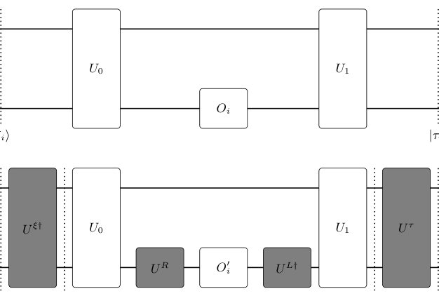
<figcaption class="paper-figure-caption"><b>Fig 1.</b> Figure 1. An example of two algorithms solving two problems that are unitarily equivalent. The algorithm A solves the problem |ξi⟩7→|τi⟩whereas the algorithm A′ solves the problem |ξ′ i⟩7→|τ ′ i⟩. This example shows that a single oracle call is needed with the application of two independent unitaries U0 and U1.</figcaption>
</figure>
</div>
<p><strong>Summary.</strong> This paper introduces a powerful technique using group symmetry to systematically construct optimal quantum transducers for state-conversion problems. By proving that the optimal catalyst can be chosen to be covariant under the problem's symmetry group, the authors derive optimal complexity bounds for fundamental algorithms like search and amplitude estimation. This advances quantum algorithm design by providing explicit, symmetry-derived constructions.</p>
<p><strong>Why it may be interesting.</strong> The rigorous connection between abstract group symmetries and the explicit construction of optimal quantum algorithms provides powerful new tools for quantum complexity theory, potentially simplifying the design of quantum circuits.</p>
<details>
<summary>Detailed structure</summary>
<p><strong>Main problem.</strong> The paper aims to develop systematic methods to construct optimal quantum transducers for state-conversion problems by leveraging the symmetry group of the underlying problem.</p>
<p><strong>Main result.</strong> The authors derive optimal transducers for key quantum primitives (like unstructured search and amplitude estimation) and prove that using symmetry leads to a weakly covariant catalyst, which bounds the transduction complexity.</p>
<p><strong>Method.</strong> The core method involves applying representation theory and symmetry arguments (symmetrization) to the state-conversion problem, showing the optimal unitary must be an intertwiner, allowing for block-diagonalization.</p>
<p><strong>Model / system.</strong> The framework is the quantum transducer, a unitary operation converting an input state to a target state via an auxiliary catalyst. The problem is formalized as a state-conversion problem defined by indexed families of states and unitaries.</p>
<p><strong>Key observables.</strong> Transduction complexity ($W$), quantum query complexity ($Q$), and the adversary bound ($    ext{Adv}$).</p>
<p><strong>Important parameters / regimes.</strong> The structure of the symmetry group $G$, and the error parameter $\epsilon$ for bounded-error algorithms.</p>
<p><strong>Assumptions / limitations.</strong> The analysis often assumes the existence of a symmetry group $G$ and relies on the ability to enlarge the Hilbert space to accommodate the symmetrization process.</p>
<p><strong>Figures summary.</strong> Figures illustrate the transformation between unitarily equivalent problems and graphically represent the action of the transducer on a vector.</p>
<p><strong>Paper structure.</strong> The paper progresses from defining the transducer model and its relation to query complexity, to introducing symmetry group actions, proving the existence of optimal covariant catalysts via symmetrization, and finally applying these techniques to derive optimal complexity bounds for specific algorithms.</p>
</details>
<details>
<summary>Abstract</summary>
<p>Transducers (Belovs, Jeffery and Yolcu, 2024) are a quantum computing framework describing a quantum algorithm as a unitary converting an input state into a target state using a catalyst, an auxiliary vector that is left unchanged. They are a powerful tool in quantum algorithm design, especially in the context of quantum query complexity: feasible points of the (dual) adversary semidefinite program directly translate into transducers and the optimal transduction complexity is equal to the adversary bound, i.e. the Las Vegas complexity, which is known to characterize bounded-error quantum query complexity. Moreover, contrary to bounded-error algorithms, transducers compose exactly, which limits overheads due to controlling errors in algorithms constructed by composition. Constructing efficient, let alone optimal, transducers in terms of quantum query complexity nevertheless remains a hard task since it still requires solving the adversary SDP and constructing the unitary to obtain an explicit algorithm. In this paper, we show how using the symmetry group of state-conversion problems simplifies both steps. First, using a symmetrization argument, we prove an optimal catalyst can always be chosen covariant under a representation of the symmetry group. Second, we prove that the transducer intertwines two different representations of the group and can thus be chosen block diagonal in the isotypic decomposition of the Hilbert space. Using those methods, we then derive optimal transducers, with optimal constants, for different widely used quantum algorithmic primitives, such as unstructured search, amplitude amplification and amplitude estimation. Our approach extends previous work on the use of representation theory to compute adversary lower bounds (Høyer, Lee, and {\v S}palek, 2007; Ambainis, Magnin, Roetteler and Roland, 2011) to the systematic construction of optimal algorithms.</p>
</details>
<p><sub><a href="#top">↑ back to top</a></sub></p>

<p><a id="paper-2610.00527"></a></p>
<h3 id="polynomial-time-local-unitary-equivalence-of-graph-states"><a href="http://arxiv.org/abs/2610.00527v1">Polynomial-time local-unitary equivalence of graph states</a></h3>
<p><strong>Authors:</strong> Yuxuan Zhang<br>
<strong>Type:</strong> theory · <strong>Category:</strong> quantum information and computing · <strong>PDF:</strong> <a href="https://arxiv.org/pdf/2610.00527v1">https://arxiv.org/pdf/2610.00527v1</a><br>
<strong>Analysis basis:</strong> full PDF text, analyzed in chunks</p>
<div class="figure-strip-hint">↔ Scroll figures horizontally</div>
<div class="paper-figures-scroll">
<figure class="paper-figure-card">
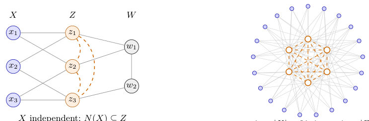
<figcaption class="paper-figure-caption"><b>Fig 1.</b> Figure 1: Generalized local complementation in standard form. (a) The schematic shows the permitted adjacencies; dashed edges mark the pairs that a generalized step on X may toggle. (b) In the Tsimakuridze–Gühne example [34], each outer vertex is adjacent to one four- or five-element subset of the six inner vertices. The first graph contains only the gray incidence edges; the second also contains the dashed clique. A level-two local unitary connects their graph states, although no local Clifford does.</figcaption>
</figure>
</div>
<p><strong>Summary.</strong> This paper presents a deterministic, polynomial-time algorithm to solve the local-unitary equivalence problem for graph states. By reformulating the problem using linear constraints over the binary field, the authors achieve a complexity of $\widetilde O(n^{6.38})$. This advances the understanding of quantum state classification and has implications for stabilizer codes and quantum computation.</p>
<p><strong>Why it may be interesting.</strong> The work provides a concrete, efficient algorithmic solution to a fundamental classification problem in quantum information theory, which is crucial for understanding the limitations and structure of quantum error-correcting codes.</p>
<details>
<summary>Detailed structure</summary>
<p><strong>Main problem.</strong> The paper addresses the long-standing open problem of determining whether two graph states are Local-Unitary (LU) equivalent, meaning they differ only by independent changes of basis on their qubits.</p>
<p><strong>Main result.</strong> A deterministic, polynomial-time algorithm is presented that decides LU equivalence for graph states in $\widetilde O(n^{6.38})$ bit operations and constructs the necessary single-qubit unitaries if equivalence holds.</p>
<p><strong>Method.</strong> The method builds upon prior quasipolynomial algorithms by replacing vertex subset enumeration with a compact system of linear constraints derived from pairs and triples, solved over the binary field.</p>
<p><strong>Model / system.</strong> The study focuses on graph states, which are quantum states defined on $n$ labeled qubits by applying controlled-Z gates corresponding to the edges of a graph $G$. The equivalence is tested for the state $|	ext{H}
angle = e^{i\phi/n} igotimes_{v=1}^n U_v |G
angle$.</p>
<p><strong>Key observables.</strong> LU equivalence, the number of local-Clifford (LC) classes within an LU class, and the explicit single-qubit unitaries $U_v$ realizing the transformation.</p>
<p><strong>Important parameters / regimes.</strong> The size of the graph, $n$, which dictates the polynomial complexity bound $\widetilde O(n^{6.38})$.</p>
<p><strong>Assumptions / limitations.</strong> The algorithm assumes the graph state is prepared via the standard CZ gate procedure, and the complexity analysis relies on solving linear equations over the binary field.</p>
<p><strong>Figures summary.</strong> Not specified, but the notes mention Figure 1 illustrates the geometry of generalized local complementation in standard form.</p>
<p><strong>Paper structure.</strong> The paper establishes the LU equivalence problem, contrasts it with simpler Clifford equivalence (LC), and then details the algorithmic steps: using a standard form, applying incidence closure, and solving the remaining graph transformation via affine linear systems.</p>
</details>
<details>
<summary>Abstract</summary>
<p>Local-unitary (LU) equivalence asks whether two quantum states differ only by independent changes of basis on their qubits. For graph states, whether this relation can be decided in polynomial time has remained open for over a decade. We give a deterministic algorithm that decides LU equivalence for graphs on $n$ labelled vertices in $\widetilde O(n^{6.38})$ bit operations and constructs exact single-qubit unitaries whenever the states are equivalent. Building on Claudet and Perdrix's quasipolynomial algorithm, we replace the enumeration of vertex subsets by a compact system of constraints generated from pairs and triples. The remaining graph transformation is found by solving linear equations over the binary field. These new steps cost $\widetilde O(n^5)$ bit operations; the inherited graph preprocessing sets the overall bound. We also count the local-Clifford (LC) classes of graph states within any LU class: their number is a power of two, computable within the same bound. For any given graph state, this decides whether single-qubit Clifford gates reach every graph state in its LU class, and supplies a counterexample when they do not. The method also decides LU equivalence of stabilizer codes encoding one logical qubit.</p>
</details>
<p><sub><a href="#top">↑ back to top</a></sub></p>

<p><a id="paper-2610.01824"></a></p>
<h3 id="qpi-deeponet-mac-a-scalable-and-stable-hybrid-classical-quantum-architecture-for-physics-informed-deep-operator-networks"><a href="http://arxiv.org/abs/2610.01824v1">QPI-DeepONet-MAC: A Scalable and Stable Hybrid Classical-Quantum Architecture for Physics-Informed Deep Operator Networks</a></h3>
<p><strong>Authors:</strong> Said Lantigua, José Valencia, Gilson Giraldi, Renato Portugal, Jonas Maziero<br>
<strong>Type:</strong> theory · <strong>Category:</strong> numerical methods · <strong>PDF:</strong> <a href="https://arxiv.org/pdf/2610.01824v1">https://arxiv.org/pdf/2610.01824v1</a><br>
<strong>Analysis basis:</strong> full PDF text, analyzed in chunks</p>
<div class="figure-strip-hint">↔ Scroll figures horizontally</div>
<div class="paper-figures-scroll">
<figure class="paper-figure-card">
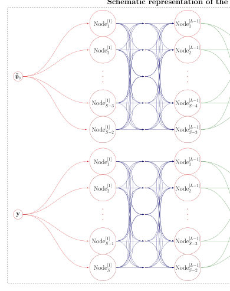
<figcaption class="paper-figure-caption"><b>Fig 1.</b> Fig. 1 Schematic representation of the unstacked Physics-Informed DeepONet (PI-DeepONet) archi- tecture. The diagram details the distinct input pathways for the branch (˜v♭) and trunk (y) variables, the hidden layers, the intermediate branch and trunk outputs (ˆβj and τ), and their final integration via the DeepONetj operator.</figcaption>
</figure>
<figure class="paper-figure-card">
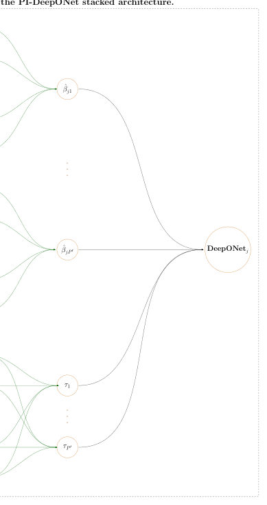
<figcaption class="paper-figure-caption"><b>Fig 2.</b> Fig. 2 Schematic representation of the stacked Physics-Informed DeepONet (PI-DeepONet) archi- tecture. This layout illustrates the multi-branch input configuration coupled with the trunk network, designed to process complex multi-field representations effectively.</figcaption>
</figure>
<figure class="paper-figure-card">
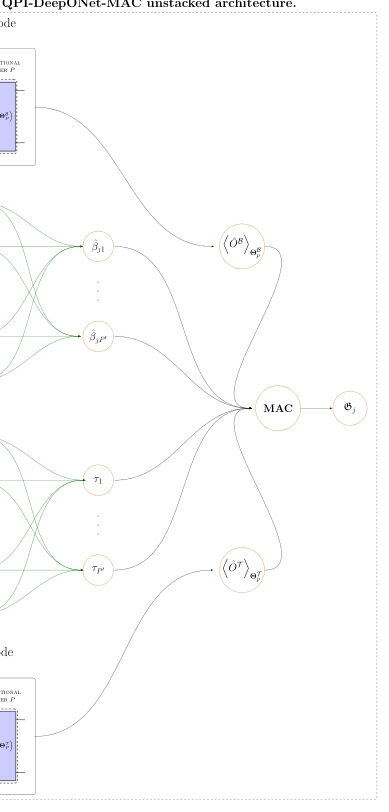
<figcaption class="paper-figure-caption"><b>Fig 3.</b> Fig. 3 Schematic representation of the unstacked Quantum Physics-Informed DeepONet with Multiplication-And-Concatenation (QPI-DeepONet-MAC) architecture. The schematic highlights the integration of Branch Quantum Nodes (BQNodes) and Trunk Quantum Nodes (TQNodes) containing</figcaption>
</figure>
</div>
<p><strong>Summary.</strong> This paper introduces QPI-DeepONet-MAC, a novel hybrid architecture that merges classical DeepONets with parameterized quantum circuits to solve parametric PDEs. It tackles the limitations of standard PI-DeepONets by providing theoretical guarantees on stability, trainability (avoiding barren plateaus), and approximation accuracy. This establishes a robust, quantum-enhanced framework for physics-informed operator learning.</p>
<p><strong>Why it may be interesting.</strong> This work is highly relevant as it proposes a concrete, theoretically grounded framework for using quantum resources (PQCs) to enhance the solvability and stability of complex, high-dimensional PDEs, which is a major focus in quantum simulation and quantum machine learning for physics.</p>
<details>
<summary>Detailed structure</summary>
<p><strong>Main problem.</strong> The paper addresses the fundamental challenge of general operator learning for parametric partial differential equations (PDEs) at the intersection of AI and physics-based modeling.</p>
<p><strong>Main result.</strong> They propose QPI-DeepONet-MAC, a hybrid quantum-classical architecture, and provide theoretical guarantees including universal approximation capability, gradient bounds to avoid barren plateaus, and a lower bound on required sensor numbers.</p>
<p><strong>Method.</strong> The method combines Physics-Informed Deep Operator Networks (PI-DeepONets) with parameterized quantum circuits (PQCs) via a multiplicative-and-additive coupling (MAC) mechanism.</p>
<p><strong>Model / system.</strong> The model is designed to approximate an operator G that maps a solution function u satisfying a set of physical PDEs. It integrates classical neural network components (DeepONet) with quantum expectation values derived from PQCs.</p>
<p><strong>Key observables.</strong> The loss function minimizes physical constraints including initial conditions (LIC), boundary conditions (LBC), the PDE itself (LPDE), and source/solution terms (LSOL).</p>
<p><strong>Important parameters / regimes.</strong> Quantum parameters (global tensor Xi_nu), classical weights (W_B, W_T), and regularization weights (lambda_COE, lambda_FID).</p>
<p><strong>Assumptions / limitations.</strong> The architecture retains universal operator approximation capabilities, and the stability is ensured by an informational regularization scheme based on quantum coherence and state fidelity.</p>
<p><strong>Figures summary.</strong> Figure 1 and 2 show schematics of the unstacked and stacked PI-DeepONet architectures, respectively. Figure 3 details the unstacked QPI-DeepONet-MAC architecture, highlighting the MAC combination block.</p>
<p><strong>Paper structure.</strong> The paper builds upon classical DeepONet structures by integrating quantum components. It details the mathematical formulation of the hybrid model, derives theoretical bounds on gradients and sampling requirements, and proposes a regularization scheme to maintain quantum structure during training.</p>
</details>
<details>
<summary>Abstract</summary>
<p>General operator learning for parametric partial differential equations (PDEs) is a fundamental challenge at the intersection of artificial intelligence and physics-based modeling. Physics-informed Deep Operator Networks (PI-DeepONets) incorporate governing equations into learning, but face optimization difficulties in high dimensions. Quantum extensions offer additional representational capacity, yet their trainability can be hindered by barren plateaus. Here, we introduce QPI-DeepONet-MAC, a hybrid quantum-classical architecture that integrates parameterized quantum circuits into PI-DeepONets through a multiplicative-and-additive coupling (MAC) of classical representations and quantum expectation values. We prove analytically that the proposed architecture retains universal operator approximation capabilities. Furthermore, we derive bounds on quantum parameter gradients, establishing explicit conditions to avoid barren plateaus alongside a scaling criterion for trainability. Additionally, we derive a lower bound on the number of sensors required for a target accuracy, directly linking sampling requirements to input function regularity, domain dimension, and PDE dynamical growth. Finally, we propose an informational regularization scheme based on quantum coherence and state fidelity dynamics to prevent coherence loss and preserve quantum structure during training. Together, these results establish a theoretical foundation for quantum-enhanced physics-informed operator learning and position QPI-DeepONet-MAC as a scalable, stable framework for solving parametric PDEs.</p>
</details>
<p><sub><a href="#top">↑ back to top</a></sub></p>

<p><a id="paper-2610.01869"></a></p>
<h3 id="quadratic-symmetry-algebras-and-sturm-algebraization-of-superintegrable-systems-with-magnetic-fields"><a href="http://arxiv.org/abs/2610.01869v1">Quadratic symmetry algebras and Sturm algebraization of superintegrable systems with magnetic fields</a></h3>
<p><strong>Authors:</strong> Shams Ara, Md Fazlul Hoque, Ian Marquette<br>
<strong>Type:</strong> theory · <strong>Category:</strong> other · <strong>PDF:</strong> <a href="https://arxiv.org/pdf/2610.01869v1">https://arxiv.org/pdf/2610.01869v1</a><br>
<strong>Analysis basis:</strong> full PDF text, analyzed in chunks</p>
<div class="figure-strip-hint">↔ Scroll figures horizontally</div>
<div class="paper-figures-scroll">
<figure class="paper-figure-card">
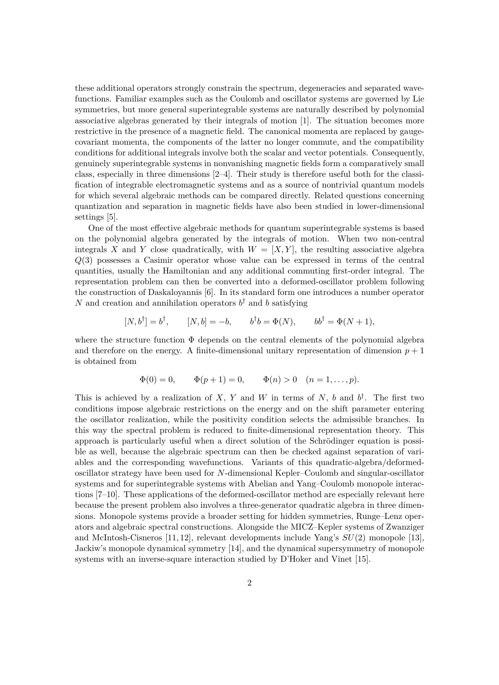
<figcaption class="paper-figure-caption"><b>Fig 1.</b> Low-resolution page preview, page 2</figcaption>
</figure>
<figure class="paper-figure-card">
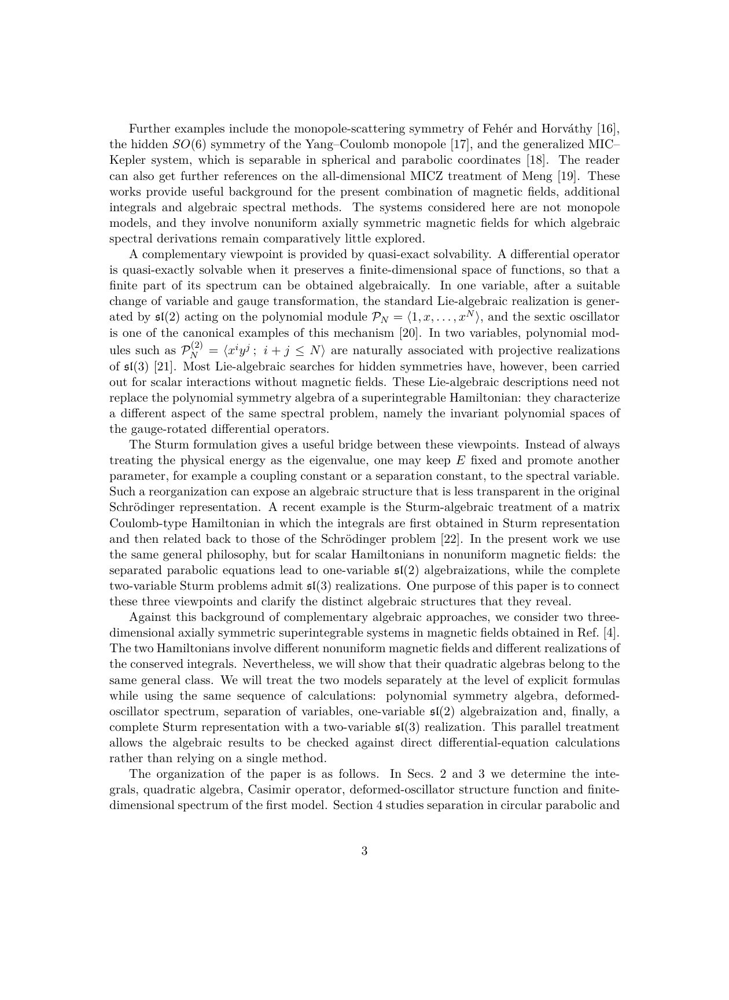
<figcaption class="paper-figure-caption"><b>Fig 2.</b> Low-resolution page preview, page 3</figcaption>
</figure>
<figure class="paper-figure-card">
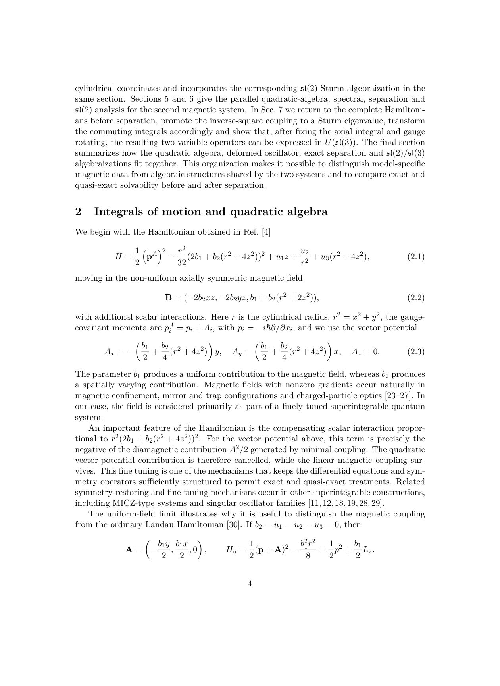
<figcaption class="paper-figure-caption"><b>Fig 3.</b> Low-resolution page preview, page 4</figcaption>
</figure>
<figure class="paper-figure-card">
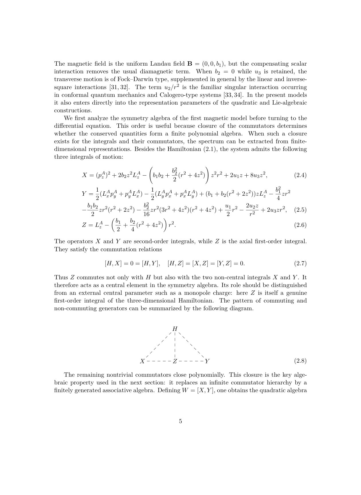
<figcaption class="paper-figure-caption"><b>Fig 4.</b> Low-resolution page preview, page 5</figcaption>
</figure>
<figure class="paper-figure-card">
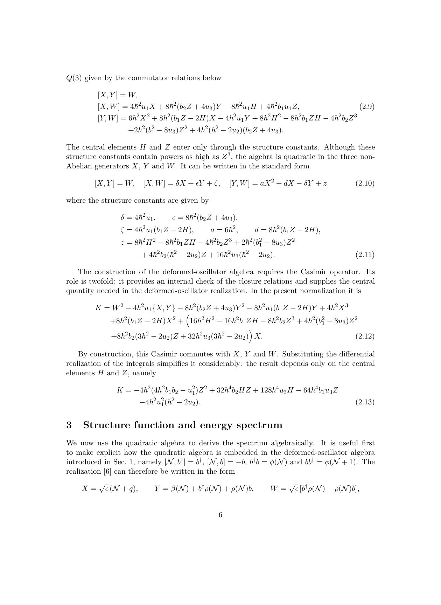
<figcaption class="paper-figure-caption"><b>Fig 5.</b> Low-resolution page preview, page 6</figcaption>
</figure>
</div>
<p><strong>Summary.</strong> This paper analyzes two quantum superintegrable systems in magnetic fields by revealing multiple underlying algebraic symmetries. The authors connect the original quadratic symmetry algebra to two subsequent structures, $  ext{sl}(3)$ and $   ext{sl}(2)$, through the process of separation of variables and Sturm eigenvalue problems. This demonstrates a deep, hierarchical algebraic organization governing the system's exact solvability.</p>
<p><strong>Why it may be interesting.</strong> The systematic connection between multiple algebraic structures ($   ext{Q}(3)   o   ext{sl}(3)  o   ext{sl}(2)$) provides a powerful, multi-faceted framework for understanding exact solvability in complex quantum systems, which is highly relevant to finding hidden symmetries in quantum field theories or many-body Hamiltonians.</p>
<details>
<summary>Detailed structure</summary>
<p><strong>Main problem.</strong> The study investigates the algebraic structure and solvability of three-dimensional quantum superintegrable systems subjected to nonvanishing, axially symmetric magnetic fields.</p>
<p><strong>Main result.</strong> The analysis reveals three complementary algebraic descriptions ($ ext{Q}(3)$, $   ext{sl}(2)$, and $  ext{sl}(3)$) for the system's spectrum, demonstrating how distinct hidden symmetries emerge at different stages of the separation process.</p>
<p><strong>Method.</strong> The authors employ a combination of algebraic methods, analyzing the quadratic algebra generated by integrals of motion, and differential equation techniques, specifically formulating the separated equations as Sturm eigenvalue problems.</p>
<p><strong>Model / system.</strong> The system consists of two distinct three-dimensional quantum Hamiltonians defined in the presence of an axially symmetric magnetic field and scalar interactions. The Hamiltonian is analyzed through its conserved integrals of motion.</p>
<p><strong>Key observables.</strong> The energy spectrum ($E$) and the separation constants are key observables, derived algebraically from the Casimir operator and the endpoint conditions of the structure function $\phi$.</p>
<p><strong>Important parameters / regimes.</strong> The magnetic field parameters ($b_1, b_2$) and the coupling constants ($u_1, u_2, u_3$) define the specific physical realization of the Hamiltonians.</p>
<p><strong>Assumptions / limitations.</strong> The analysis assumes the existence of a common singular 2:1 oscillator normal form after fixing the axial integral, which allows for the identification of a common $    ext{sl}(3)$ structure.</p>
<p><strong>Paper structure.</strong> The paper systematically moves from identifying the quadratic symmetry algebra ($  ext{Q}(3)$) of the original Hamiltonian to deriving the spectrum via deformed-oscillator representations. It then analyzes separation of variables in parabolic coordinates, leading to $   ext{sl}(2)$ algebraization, and finally constructs a pre-separation Sturm representation that reveals a universal $ ext{sl}(3)$ structure.</p>
</details>
<details>
<summary>Abstract</summary>
<p>We study two three-dimensional quantum superintegrable systems in nonvanishing axially symmetric magnetic fields. For each model the integrals generate a quadratic algebra with a Casimir, and finite-dimensional deformed-oscillator representations yield algebraic spectra. The same spectra are recovered by separation of variables. In circular parabolic coordinates the separated equations are sextic biconfluent-Heun equations with finite polynomial sectors. We formulate them as Sturm eigenvalue problems with the physical energy as a parameter and the separation constant diagonalized. After gauge transformation, each equation admits an $sl(2)$ algebraization and reduces to a finite tridiagonal matrix. We also construct a pre-separation Sturm representation of each complete Hamiltonian, taking the inverse-square coupling as the Sturm eigenvalue. The transformed integrals remain commuting and, after fixing the axial integral, changing variables and gauge rotating, the two-variable Sturm Hamiltonian and its non-central integrals belong to the universal enveloping algebra $U(sl(3))$. We thus obtain three complementary algebraic descriptions: the quadratic-algebra/deformed-oscillator representation of the original Hamiltonian, the $sl(2)$ algebraization after parabolic separation, and the $sl(3)$ algebraization of the complete Sturm problem before separation. Although the two magnetic Hamiltonians are distinct in the original classification, fixing the axial integral reduces them to the same singular 2:1 oscillator normal form with different effective parameter embeddings. This explains the common $sl(3)$ structure without implying equivalence of the original magnetic systems. These results show how distinct hidden algebraic structures and exact or quasi-exact solvability can emerge at different stages of a multiseparable superintegrable system.</p>
</details>
<p><sub><a href="#top">↑ back to top</a></sub></p>

<p><a id="paper-2610.00502"></a></p>
<h3 id="quantum-algorithms-for-opi-variants-beyond-locality-and-classical-decodability"><a href="http://arxiv.org/abs/2610.00502v1">Quantum Algorithms for OPI Variants Beyond Locality and Classical Decodability</a></h3>
<p><strong>Authors:</strong> Seyoon Ragavan, Noah Shutty<br>
<strong>Type:</strong> theory · <strong>Category:</strong> quantum information and computing · <strong>PDF:</strong> <a href="https://arxiv.org/pdf/2610.00502v1">https://arxiv.org/pdf/2610.00502v1</a><br>
<strong>Analysis basis:</strong> full PDF text, analyzed in chunks</p>
<div class="figure-strip-hint">↔ Scroll figures horizontally</div>
<div class="paper-figures-scroll">
<figure class="paper-figure-card">
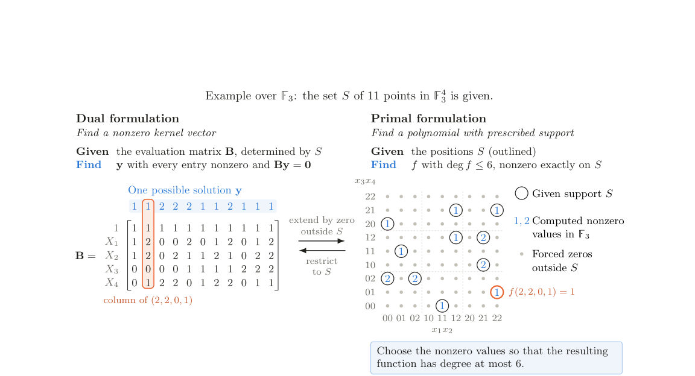
<figcaption class="paper-figure-caption"><b>Fig 1.</b> Figure 1: The selected set S is the input; the displayed nonzero values illustrate one valid output. In this example over F3 with v = 4 variables, S has m = 11 points, and B evaluates the n = 5 monomials 1, X1, . . . , X4 of degree at most one at these points. The dual formulation (left) asks for y with no zero entry and By = 0; each entry of y is drawn above its column. The primal formulation (right) asks for a polynomial f of degree at most 6 that is nonzero exactly on S. Extending y by zero outside S, or restricting f to S, converts one kind of solution into the other.</figcaption>
</figure>
<figure class="paper-figure-card">
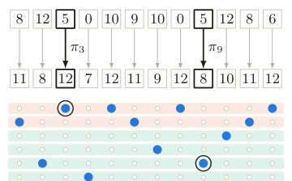
<figcaption class="paper-figure-caption"><b>Fig 2.</b> Figure 2: An example over F13 with twelve coordinates. The code constraint requires x ∈C, where C is a Reed–Solomon code with evaluation points 1, . . . , 12 and dimension at least 3; this holds since xi = i2 + i + 6 is quadratic in i. Each coordinate i then relabels its symbol by its own permutation πi of F13, giving yi = πi(xi) without moving any position; the two highlighted coordinates carry the same symbol 5 but receive different labels. The histogram constraints apply to y, which need not lie in C: the symbols 0, . . . , 6 must not occur, each of 7, . . . , 10 must occur once or twice, and each of 11 and 12 three or four times. In this finite example, the proportions 1/2, 1/3 and 1/6...</figcaption>
</figure>
<figure class="paper-figure-card">
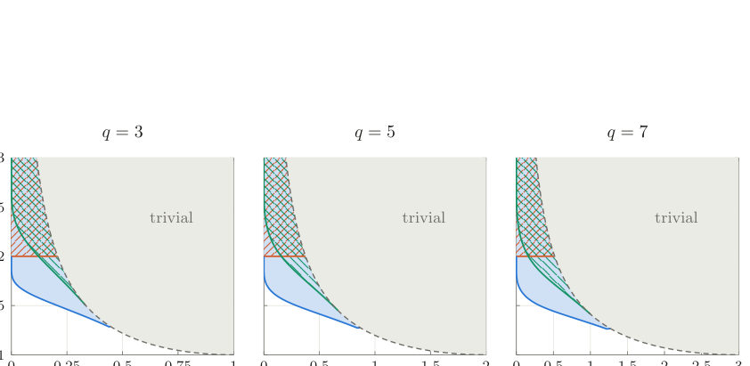
<figcaption class="paper-figure-caption"><b>Fig 3.</b> Figure 3: Asymptotic sufficient regimes for the Reed–Muller support problem, with n = Countq(v, ⌊ρv⌋) and m = min(⌊nc⌋, qv). The axes give the degree per variable ρ and the sam- pling exponent c. Blue shading marks our quantum algorithm using two-fold multiplication; green hatching marks our classical algorithm using three-fold multiplication, with thresholds from Equa- tion (4). Both guarantees give polynomial-time algorithms succeeding with high probability on a random S. Strictly above the dashed curve cCntExpq(ρ) = 1, the problem is eventually trivial: S = Fv q and the all-ones vector is a solution (gray). Orange hatching marks the nontrivial region with c &gt; 2. For uniformly random B,...</figcaption>
</figure>
</div>
<p><strong>Summary.</strong> This paper develops quantum algorithms for solving hard problems related to coding theory and polynomial intersection (OPI) variants. It achieves this by overcoming classical limitations by utilizing quantum decoders and incorporating global constraints like symbol frequency histograms. The work demonstrates potential quantum advantage in parameter regimes where classical methods fail.</p>
<p><strong>Why it may be interesting.</strong> The focus on quantum algorithms for structured problems like coding theory and polynomial reconstruction directly relates to quantum complexity theory and the development of quantum computational primitives.</p>
<details>
<summary>Detailed structure</summary>
<p><strong>Main problem.</strong> The paper addresses finding solutions to linear equations over finite fields, $By=0$, and variants of the Optimal Polynomial Intersection (OPI) problem, pushing beyond classical limitations in quantum algorithmic frameworks.</p>
<p><strong>Main result.</strong> The authors present quantum algorithms that solve these problems in regimes where classical algorithms are insufficient, particularly by exploiting structural properties like the 'two-fold multiplication property' of the dual code.</p>
<p><strong>Method.</strong> The work employs quantum decoding techniques and analyzes the required structural properties (e.g., dimensions of spaces spanned by products of codewords) to establish quantum advantage over classical methods.</p>
<p><strong>Model / system.</strong> The problem is modeled using coding theory, specifically involving Reed-Muller codes punctured at random evaluation points over a finite field $\mathbb{F}_q$.</p>
<p><strong>Key observables.</strong> The primary observables are the existence of solutions $y$ to $By=0$ and the probability of satisfying global constraints (histogram-local constraints).</p>
<p><strong>Important parameters / regimes.</strong> Key parameters include the dimensions $n$ and $m$, the field size $q$, and structural invariants like $s_2$ and $s_3$ related to code products.</p>
<p><strong>Assumptions / limitations.</strong> The quantum approach assumes the existence of a quantum decoder that bypasses the need for an efficient classical decoder, and the second contribution assumes the stability of random vectors under resampling.</p>
<p><strong>Figures summary.</strong> Figure 1 illustrates the dual formulation ($By=0$) and primal formulation (polynomial support $S$) for an example over $\mathbb{F}_3$. Figure 2 illustrates the histogram-local constraint example over $\mathbb{F}_{13}$.</p>
<p><strong>Paper structure.</strong> The paper is structured around two main contributions: the first tackles solving $By=0$ using a quantum decoder exploiting the 'two-fold multiplication property,' and the second addresses 'histogram-local' constraints, leading to a quantum-classical separation.</p>
</details>
<details>
<summary>Abstract</summary>
<p>Regev's reduction is a quantum algorithmic framework for finding codewords satisfying nonlinear constraints by decoding the dual code. To date, applications that have not been dequantized have relied on efficient classical decoders and coordinate-wise constraints specifying a set of allowed values for each coordinate. We push past these two restrictions separately via two separate contributions.   Our first contribution uses a quantum decoder to find solutions $\mathbf{y}\in(\mathbb{F}_q\setminus\{0\})^m$ to $\mathbf{B}\mathbf{y}=0$, where $\mathbf{B}\in\mathbb{F}_q^{n\times m}$. For fixed prime $q>2$, Chen, Liu, and Zhandry (Eurocrypt 2022) solve this problem for random matrices with $m=Ω(n^2)$, a regime now covered by classical algorithms. We adapt their template to codes (spanned by the rows of $\mathbf{B}$) with a <code>two-fold multiplication property'': the coordinate-wise products of pairs of codewords span a space of dimension much smaller than $m$.   Our second contribution retains classical decoding but allows global constraints on symbol frequencies. We study</code>histogram-local'' constraints, which specify the allowed numbers of occurrences of each symbol. For broad families of these constraints, we show that a uniformly random satisfying vector remains satisfying with constant probability after resampling a uniformly random coordinate. This stability provides sufficient Fourier mass at decodable Hamming weights, yielding efficient quantum algorithms for variants of optimal polynomial intersection (OPI).</p>
</details>
<p><sub><a href="#top">↑ back to top</a></sub></p>

<p><a id="paper-2610.00669"></a></p>
<h3 id="quantum-circuit-pruning-from-nisq-architectures-to-fault-tolerant-operations"><a href="http://arxiv.org/abs/2610.00669v1">Quantum Circuit Pruning: From NISQ Architectures to Fault-Tolerant Operations</a></h3>
<p><strong>Authors:</strong> Pau Escofet, Carmen G. Almudéver, Sergi Abadal, Eduard Alarcón<br>
<strong>Type:</strong> theory · <strong>Category:</strong> quantum information and computing · <strong>PDF:</strong> <a href="https://arxiv.org/pdf/2610.00669v1">https://arxiv.org/pdf/2610.00669v1</a><br>
<strong>Analysis basis:</strong> full PDF text, analyzed in chunks</p>
<div class="figure-strip-hint">↔ Scroll figures horizontally</div>
<div class="paper-figures-scroll">
<figure class="paper-figure-card">
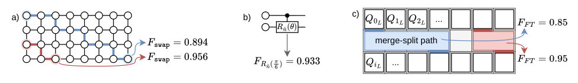
<figcaption class="paper-figure-caption"><b>Fig 1.</b> Fig. 1. Routing-aware pruning decision for a parametric controlled rotation gate (b) in both the NISQ and FT settings. (a) NISQ case: the compiler evaluates the physical distance between the two qubits. The blue path is too long and the gate is pruned; the red path is short enough and the gate is retained. (c) FT case: logical qubits occupy the top and bottom rows, while the middle row contains ancilla patches used to mediate the merge-split path. The blue path is too long and the gate is pruned; the red path is short enough and the gate is retained. In both cases, the pruning threshold is set by the same bound cos2 (θ/2).</figcaption>
</figure>
<figure class="paper-figure-card">
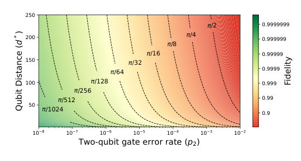
<figcaption class="paper-figure-caption"><b>Fig 2.</b> Fig. 2. Analytical characterisation of the pruning boundary in the NISQ setting. The color map shows Fswap as a function of the two-qubit gate error rate p2 and the qubit routing distance. Dashed lines indicate the critical distance d∗for parametric gates with angles from π/2 to π/1024. Gates whose interacting qubits are separated by a distance above the corresponding dashed line will be pruned, while those below will be maintained.</figcaption>
</figure>
<figure class="paper-figure-card">
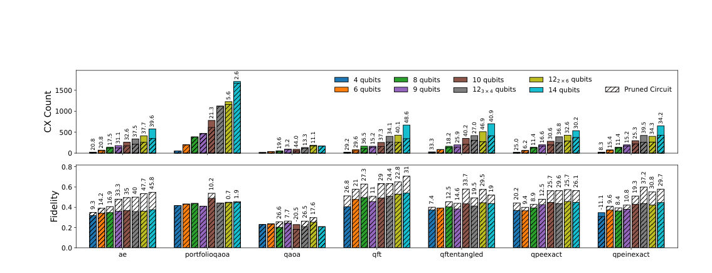
<figcaption class="paper-figure-caption"><b>Fig 3.</b> Fig. 3. Two-qubit gate count (top) and circuit fidelity (bottom) for the selected circuits containing between 4 and 14 qubits, when compiled with (hatched bars) and without (solid bars) the proposed pruning strategy. The percentage improvement in fidelity achieved by pruning is indicated above each bar.</figcaption>
</figure>
<figure class="paper-figure-card">
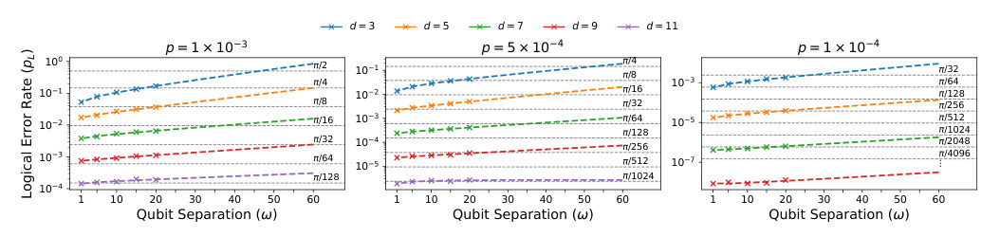
<figcaption class="paper-figure-caption"><b>Fig 4.</b> Fig. 4. LER of two logical CNOT gates implemented via lattice surgery as a function of patch separation, for three depolarizing noise regimes and surface code distances dcode ∈{3, 5, 7, 9, 11}. LER grows with patch separation as longer merge-split paths accumulate more errors. Horizontal dashed lines indicate the logical infidelity threshold 1 −cos2(θ/2) for parametric gates with rotation angles θ.</figcaption>
</figure>
</div>
<p><strong>Summary.</strong> This paper introduces a novel, routing-aware method to prune unnecessary two-qubit gates from quantum circuits by comparing the gate's computational benefit against the fidelity cost incurred during physical execution. The strategy is shown to be effective and unified, providing significant performance gains for both current NISQ devices and future fault-tolerant quantum computers.</p>
<p><strong>Why it may be interesting.</strong> This work provides a practical, unified compilation strategy that directly addresses hardware constraints (routing overhead) when optimizing quantum circuits, which is crucial for implementing complex quantum algorithms on near-term and future hardware.</p>
<details>
<summary>Detailed structure</summary>
<p><strong>Main problem.</strong> The paper addresses the need for a routing-aware strategy to selectively prune parametric two-qubit gates in quantum circuits.</p>
<p><strong>Main result.</strong> The proposed pruning strategy achieves significant gate count reductions (up to 48.6%) and fidelity improvements (up to 47.7%) in the NISQ regime, and remains relevant for FTQC architectures.</p>
<p><strong>Method.</strong> It compares an architecture-independent lower bound on the fidelity cost of omitting a gate against hardware-specific models for execution routing costs in both NISQ and FTQC settings.</p>
<p><strong>Model / system.</strong> The analysis covers both Noisy Intermediate-Scale Quantum (NISQ) architectures and Fault-Tolerant Quantum Computing (FTQC) using surface codes and lattice surgery. The cost models involve SWAP chains for NISQ and Logical Error Rates (LER) for FTQC.</p>
<p><strong>Key observables.</strong> Gate count reduction, final state fidelity improvement, and the critical distance ($d^*$) defining the pruning boundary.</p>
<p><strong>Important parameters / regimes.</strong> Rotation angle ($   heta$), qubit distance ($d$), physical error rates ($p^2$), and code distances ($d_{ ext{code}}$).</p>
<p><strong>Assumptions / limitations.</strong> The comparison relies on modeling the execution cost (e.g., SWAP chains or LER growth) and assumes the fidelity bound $\cos^2(	heta/2)$ is a valid measure of computational contribution.</p>
<p><strong>Figures summary.</strong> Figures illustrate the pruning decision process for controlled rotations in both NISQ and FT settings, showing the threshold set by the fidelity bound, and characterizing the critical distance $d^*$ dependence on noise and angle.</p>
<p><strong>Paper structure.</strong> The paper introduces the pruning concept, develops the unified criterion comparing omission benefit vs. execution cost, and then applies this framework to benchmark circuits in both NISQ and FT regimes, concluding with scalability analysis.</p>
</details>
<details>
<summary>Abstract</summary>
<p>We present a routing-aware pruning strategy for quantum circuits that selectively removes parametric two-qubit gates whose computational contribution is outweighed by the fidelity cost of their execution, and assess it across both Noisy Intermediate-Scale Quantum (NISQ) and fault-tolerant quantum computing (FTQC) architectures. Each two-qubit gate of a circuit is evaluated by comparing an architecture-independent lower bound on the fidelity cost of omitting the gate against a hardware-specific model for the routing execution cost in each setting. We additionally provide an analytical characterization of the pruning boundary as a function of rotation angle, qubit distance, and hardware noise. Simulations on benchmark circuits demonstrate gate count reductions of up to 48.6% and fidelity improvements of up to 47.7% in the NISQ regime, while a feasibility analysis on FT hardware indicates that pruning is expected to remain relevant across a range of code distances and physical error rates. These results establish routing-aware pruning as a practical and unified compilation strategy across the quantum computing stack.</p>
</details>
<p><sub><a href="#top">↑ back to top</a></sub></p>

<p><a id="paper-2610.01855"></a></p>
<h3 id="quantum-optimal-transport-barycenters-existence-duality-and-gaussian-rigidity"><a href="http://arxiv.org/abs/2610.01855v1">Quantum Optimal Transport Barycenters: Existence, Duality, and Gaussian Rigidity</a></h3>
<p><strong>Authors:</strong> Augusto Gerolin, Zhiyi Lin<br>
<strong>Type:</strong> theory · <strong>Category:</strong> other · <strong>PDF:</strong> <a href="https://arxiv.org/pdf/2610.01855v1">https://arxiv.org/pdf/2610.01855v1</a><br>
<strong>Analysis basis:</strong> full PDF text, analyzed in chunks</p>
<div class="figure-strip-hint">↔ Scroll figures horizontally</div>
<div class="paper-figures-scroll">
<figure class="paper-figure-card">
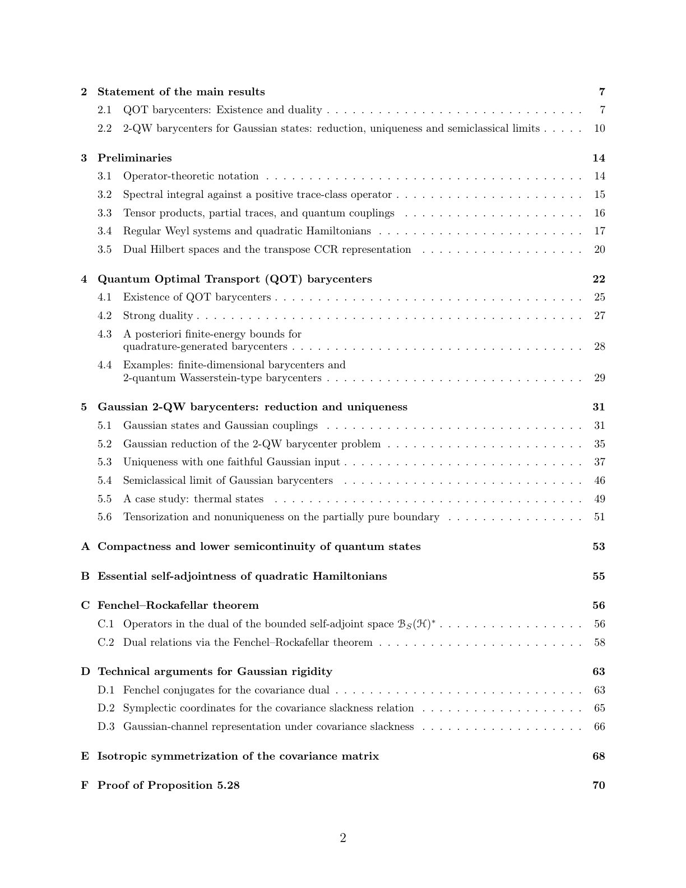
<figcaption class="paper-figure-caption"><b>Fig 1.</b> Low-resolution page preview, page 2</figcaption>
</figure>
<figure class="paper-figure-card">

<figcaption class="paper-figure-caption"><b>Fig 2.</b> Low-resolution page preview, page 3</figcaption>
</figure>
<figure class="paper-figure-card">
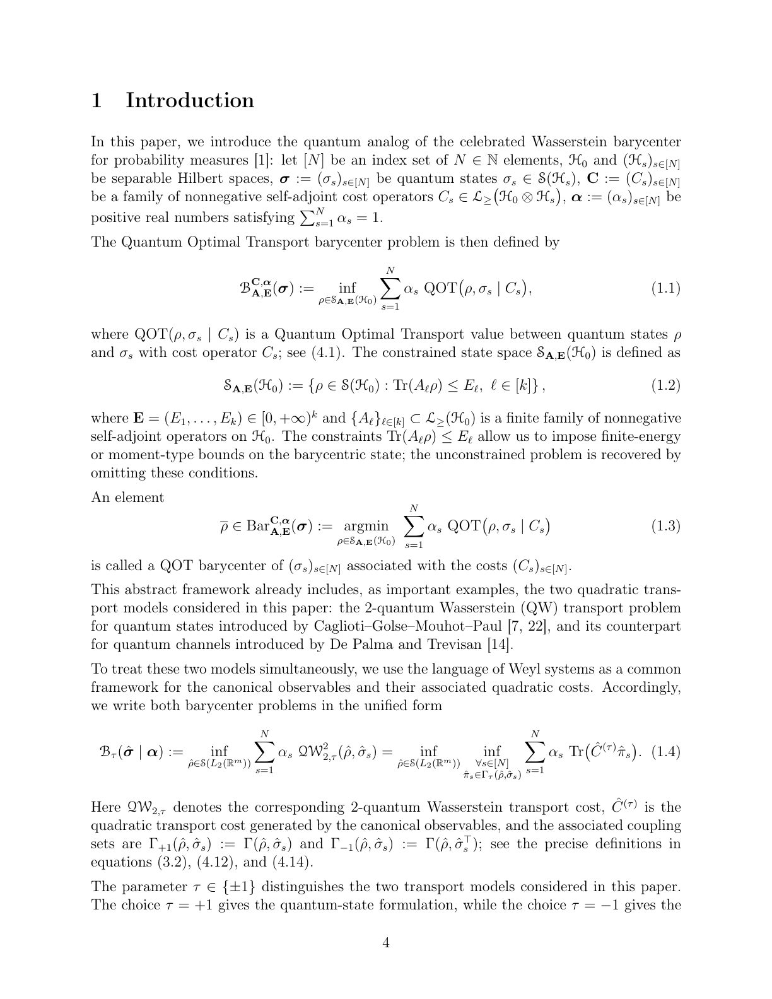
<figcaption class="paper-figure-caption"><b>Fig 3.</b> Low-resolution page preview, page 4</figcaption>
</figure>
<figure class="paper-figure-card">
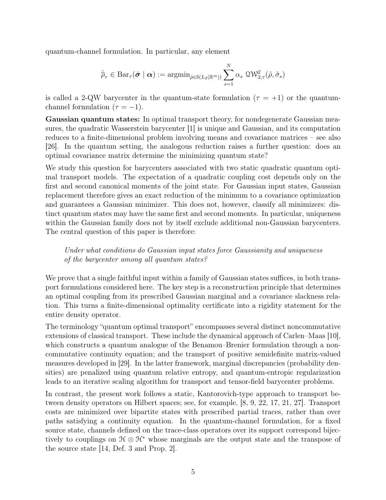
<figcaption class="paper-figure-caption"><b>Fig 4.</b> Low-resolution page preview, page 5</figcaption>
</figure>
<figure class="paper-figure-card">
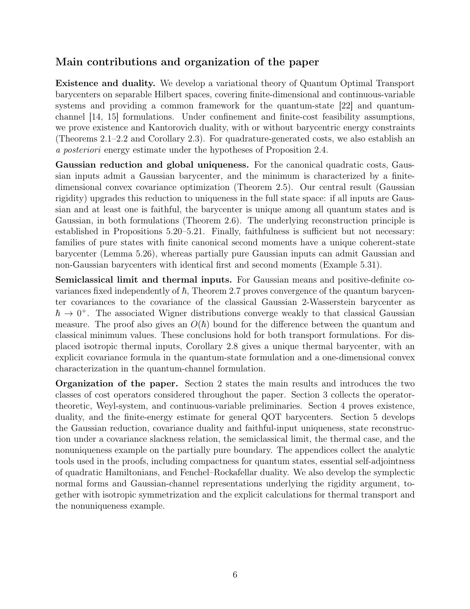
<figcaption class="paper-figure-caption"><b>Fig 5.</b> Low-resolution page preview, page 6</figcaption>
</figure>
</div>
<p><strong>Summary.</strong> This paper introduces a Quantum Optimal Transport (QOT) framework to define a barycenter for multiple quantum states. It proves that under suitable conditions, this barycenter exists and is unique, especially when the input states are Gaussian. This mathematical tool is vital for understanding how quantum states are averaged or mixed in a geometrically consistent manner.</p>
<p><strong>Why it may be interesting.</strong> This work provides a powerful, mathematically rigorous tool for defining 'averages' or 'means' of quantum states that respects underlying physical geometry (like the Wasserstein metric), which is crucial for understanding quantum state mixing and estimation.</p>
<details>
<summary>Detailed structure</summary>
<p><strong>Main problem.</strong> The paper develops a Quantum Optimal Transport (QOT) barycenter framework to find a representative quantum state that minimizes the weighted sum of quantum transport costs from several input states.</p>
<p><strong>Main result.</strong> It establishes existence and duality for this barycenter, and crucially proves a Gaussian rigidity theorem: if enough input states are Gaussian and at least one is faithful, the barycenter is unique and necessarily Gaussian.</p>
<p><strong>Method.</strong> The approach uses a static, Kantorovich-type formulation, which, for Gaussian inputs, reduces the problem to a finite-dimensional convex optimization over covariance matrices.</p>
<p><strong>Model / system.</strong> The model involves finding the barycenter $
ho$ of a set of input quantum states $\{\sigma_s\}$ on separable Hilbert spaces, utilizing quantum channels and associated cost operators $C_s$. The framework unifies treatments for both quantum states and quantum channels.</p>
<p><strong>Key observables.</strong> The barycenter state $
ho$, the input states $\sigma_s$, and the associated covariance matrices $\Sigma$.</p>
<p><strong>Important parameters / regimes.</strong> The weights $\alpha_s$ summing to one, and the quantum cost operators $C_s$, particularly those derived from quadratic costs.</p>
<p><strong>Assumptions / limitations.</strong> The general theory requires specific compactness conditions on the cost operators for existence; uniqueness is strongly established by specializing to Gaussian inputs and requiring at least one faithful Gaussian input.</p>
<p><strong>Paper structure.</strong> The paper builds from establishing general existence and duality results for QOT barycenters, specializes to the Gaussian case where the problem reduces to covariance optimization, and culminates in proving the Gaussian rigidity theorem and the semiclassical limit.</p>
</details>
<details>
<summary>Abstract</summary>
<p>We develop a Quantum Optimal Transport (QOT) barycenter framework for quantum states, as an analog of Wasserstein barycenters~\cite{AguCar}, and establish existence and duality results for a broad class of possibly unbounded transport costs on separable Hilbert spaces. Our framework provides, in particular, a unified treatment of $2$-quantum Wasserstein (QW) barycenters in both the quantum-state and quantum-channel formulations by specializing to the canonical quadratic cost operators associated with the $2$-quantum Wasserstein distances of Caglioti--Golse--Mouhot--Paul~\cite{caglioti2021towards,Golse-Mouhot-Paul:2016} and De Palma--Trevisan~\cite{DPaTre19}.   The central results concern Gaussian input states and, in particular, Gaussian rigidity: whether Gaussian input states force the 2-QW barycenter itself to be Gaussian and uniquely determined when the minimization is taken over all quantum states. We first show that the barycenter problem admits a Gaussian minimizer and reduces to a finite-dimensional convex optimization problem over covariance matrices.   The main difficulty is that uniqueness of the optimal covariance does not, in general, imply uniqueness of the underlying quantum state. We bridge this gap through a state-reconstruction principle under covariance complementary slackness that upgrades uniqueness of the optimal covariance to uniqueness of the full quantum state, and thereby prove a global rigidity theorem: if at least one Gaussian input is faithful, then the barycenter is unique among all quantum states and is necessarily Gaussian. Faithfulness is sufficient but not necessary: families of pure inputs still determine a unique barycenter, whereas partially pure nonfaithful Gaussian inputs may admit multiple barycenters.</p>
</details>
<p><sub><a href="#top">↑ back to top</a></sub></p>

<p><a id="paper-2610.02094"></a></p>
<h3 id="quantum-state-preparation-for-weighted-d-dnnf"><a href="http://arxiv.org/abs/2610.02094v1">Quantum state preparation for weighted d-DNNF</a></h3>
<p><strong>Authors:</strong> Steef Hegeman, Joon Hyung Lee, Alfons Laarman<br>
<strong>Type:</strong> theory · <strong>Category:</strong> quantum information and computing · <strong>PDF:</strong> <a href="https://arxiv.org/pdf/2610.02094v1">https://arxiv.org/pdf/2610.02094v1</a><br>
<strong>Analysis basis:</strong> full PDF text, analyzed in chunks</p>
<div class="figure-strip-hint">↔ Scroll figures horizontally</div>
<div class="paper-figures-scroll">
<figure class="paper-figure-card">
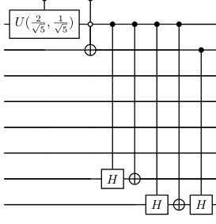
<figcaption class="paper-figure-caption"><b>Fig 1.</b> Figure 3. The quantum circuit Q(D) preparing S2(D) for the 2-d-DNNF D from Figure 2. The dashed lines show the boundaries between the certificate propagation, nonzero, and reset layers.</figcaption>
</figure>
</div>
<p><strong>Summary.</strong> This paper solves the Quantum State Preparation Problem for states defined by weighted d-DNNF circuits. It constructs an efficient quantum circuit $Q(D)$ using three distinct layers—certificate propagation, nonzero computation, and reset—to prepare the target state. The resulting circuit exhibits polynomial complexity bounds in terms of the size and depth of the input d-DNNF.</p>
<p><strong>Why it may be interesting.</strong> This work provides concrete, efficient quantum circuit constructions for preparing states defined by classical computational structures (d-DNNF), which is fundamental knowledge for designing quantum algorithms and simulating quantum processes.</p>
<details>
<summary>Detailed structure</summary>
<p><strong>Main problem.</strong> The paper addresses the Quantum State Preparation Problem (QSP): efficiently generating a quantum circuit that prepares a target quantum state given its description.</p>
<p><strong>Main result.</strong> It provides explicit constructions showing that for states described by weighted d-DNNF, the required quantum circuit can be generated with polynomial complexity in the size of the description.</p>
<p><strong>Method.</strong> The construction involves designing a quantum circuit $Q(D)$ structured in three layers—certificate propagation, nonzero computation, and reset—utilizing gates from $\{X, CX\} \cup SU(2)$.</p>
<p><strong>Model / system.</strong> The quantum state is defined by the weighted d-DNNF (deterministic, decomposable pseudo-Boolean circuit) $D$. The target state is typically $S_2(D) = \sum_{x} D(x) |x
angle$.</p>
<p><strong>Key observables.</strong> Circuit complexity metrics: Size ($|D|$), Depth ($  ext{depth}(D)$), and Width.</p>
<p><strong>Important parameters / regimes.</strong> The complexity bounds are $O(|D|)$ gates, $O(	ext{depth}(D))$ depth (for 2-d-DNNF), and $O(|D|)$ width.</p>
<p><strong>Assumptions / limitations.</strong> The analysis assumes a computational RAM model where complex arithmetic operations are constant time. It also relies on the structure of certificates within the d-DNNF.</p>
<p><strong>Figures summary.</strong> Figure 1 illustrates a weighted 2-d-DNNF example. Figure 2 shows a normalized weighted 2-d-DNNF. Figure 3 displays the resulting quantum circuit $Q(D)$ composed of the three distinct functional layers.</p>
<p><strong>Paper structure.</strong> The paper first establishes the problem and then details the construction of the circuit $Q(D)$ in three sequential layers: certificate propagation, nonzero layer, and reset layer. It proves correctness and analyzes the resulting complexity bounds.</p>
</details>
<details>
<summary>Abstract</summary>
<p>The quantum state preparation problem is to, given a description of a quantum state, efficiently generate a quantum circuit computing the state. We show that for quantum states described by weighted d-DNNF (deterministic, decomposable pseudo-Boolean circuits) a quantum circuit computing the state can be obtained in linear time up to complex arithmetic.</p>
</details>
<p><sub><a href="#top">↑ back to top</a></sub></p>

<p><a id="paper-2610.02135"></a></p>
<h3 id="random-quantum-circuits-beyond-moment-matching"><a href="http://arxiv.org/abs/2610.02135v1">Random Quantum Circuits Beyond Moment Matching</a></h3>
<p><strong>Authors:</strong> Shih-Han Hung<br>
<strong>Type:</strong> theory · <strong>Category:</strong> quantum information and computing · <strong>PDF:</strong> <a href="https://arxiv.org/pdf/2610.02135v1">https://arxiv.org/pdf/2610.02135v1</a><br>
<strong>Analysis basis:</strong> full PDF text, analyzed in chunks</p>
<div class="figure-strip-hint">↔ Scroll figures horizontally</div>
<div class="paper-figures-scroll">
<figure class="paper-figure-card">
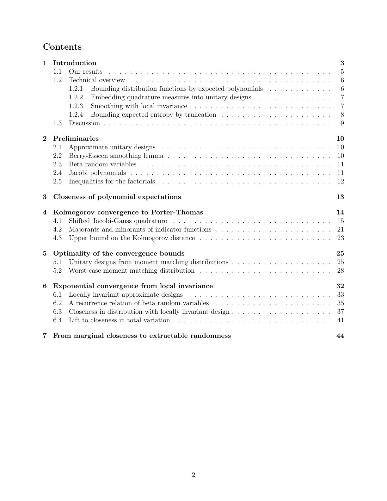
<figcaption class="paper-figure-caption"><b>Fig 1.</b> Low-resolution page preview, page 2</figcaption>
</figure>
<figure class="paper-figure-card">
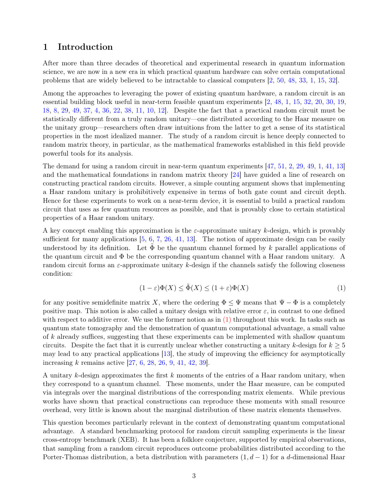
<figcaption class="paper-figure-caption"><b>Fig 2.</b> Low-resolution page preview, page 3</figcaption>
</figure>
<figure class="paper-figure-card">
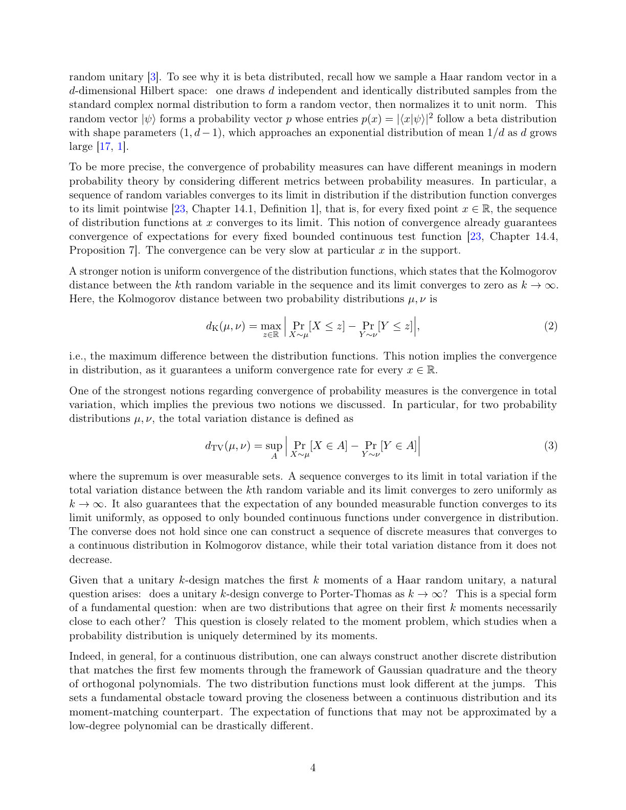
<figcaption class="paper-figure-caption"><b>Fig 3.</b> Low-resolution page preview, page 4</figcaption>
</figure>
<figure class="paper-figure-card">
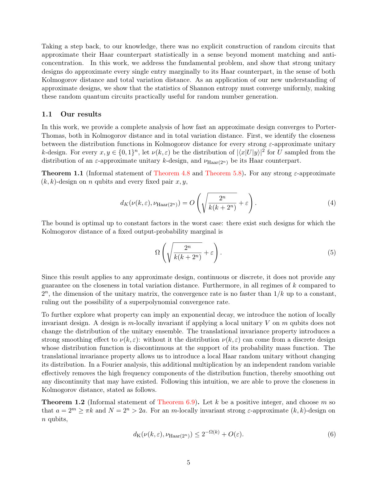
<figcaption class="paper-figure-caption"><b>Fig 4.</b> Low-resolution page preview, page 5</figcaption>
</figure>
<figure class="paper-figure-card">
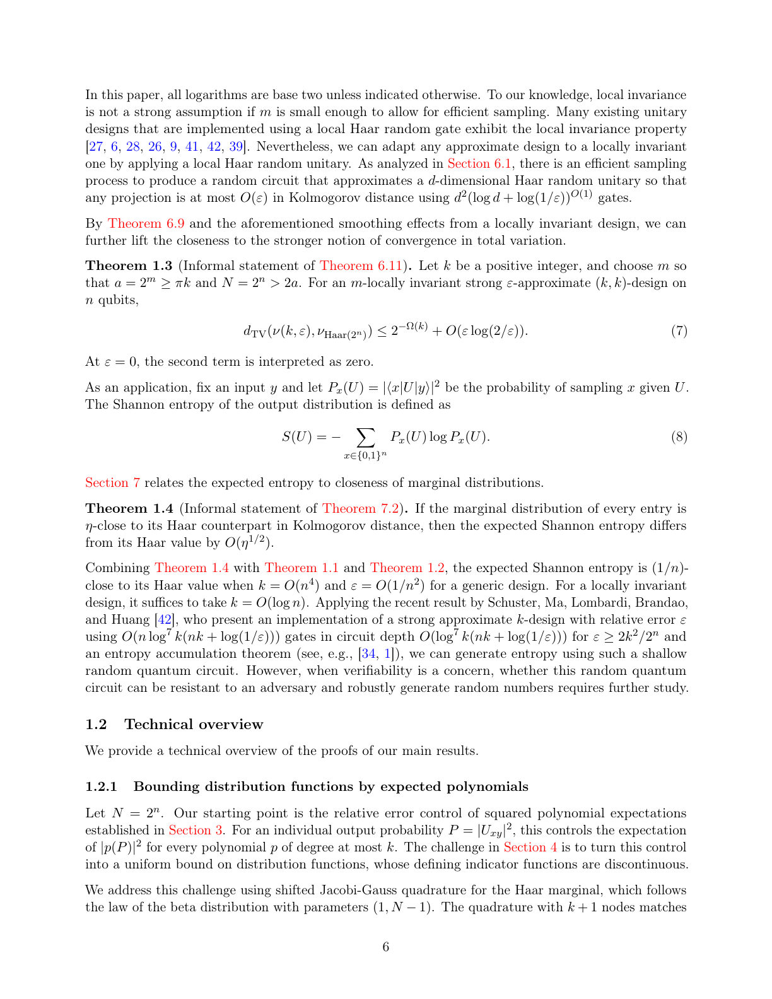
<figcaption class="paper-figure-caption"><b>Fig 5.</b> Low-resolution page preview, page 6</figcaption>
</figure>
</div>
<p><strong>Summary.</strong> This work rigorously analyzes the convergence of random quantum circuits to ideal Haar-random unitary evolution by analyzing the distribution of output probabilities. It shows that while moment matching provides some bounds, imposing additional structure, specifically local invariance, leads to an exponential improvement in the accuracy of the approximation. This is vital for understanding the fidelity of quantum simulators and random quantum processes.</p>
<p><strong>Why it may be interesting.</strong> It provides rigorous mathematical tools to quantify how quickly complex quantum processes (like random scrambling) approach true randomness, which is crucial for understanding quantum simulation fidelity and information scrambling.</p>
<details>
<summary>Detailed structure</summary>
<p><strong>Main problem.</strong> The paper quantifies the accuracy with which approximate unitary quantum circuits (k-designs) reproduce the full statistical distributions of individual output probabilities compared to ideal Haar-random unitaries.</p>
<p><strong>Main result.</strong> It establishes error bounds in Kolmogorov and total variation distances, showing that local invariance provides an exponential improvement in convergence rate over simple moment matching.</p>
<p><strong>Method.</strong> The analysis uses the framework of unitary k-designs, comparing the output probability distributions of approximate circuits to the Haar distribution using advanced metrics like Kolmogorov and total variation distances.</p>
<p><strong>Model / system.</strong> The model involves random quantum circuits acting on $n$ qubits, designed to approximate the evolution generated by a Haar-random unitary matrix.</p>
<p><strong>Key observables.</strong> Individual output probabilities (approximated by the Porter-Thomas distribution), expected Shannon entropy of the output distribution.</p>
<p><strong>Important parameters / regimes.</strong> The design order $k$, the approximation error $\epsilon$, and the number of qubits $n$.</p>
<p><strong>Assumptions / limitations.</strong> The primary assumption is the existence of a strong $\epsilon$-approximate unitary $k$-design, which matches moments up to a certain order.</p>
<p><strong>Paper structure.</strong> The paper moves from establishing the general error bound based on moment matching to identifying the structural requirement (local invariance) that yields exponentially better convergence rates, concluding with an application to entropy estimation.</p>
</details>
<details>
<summary>Abstract</summary>
<p>Random quantum circuits aim to efficiently reproduce the statistical properties of ideal random quantum evolution. One approach is to construct approximate unitary designs, which match the moments of Haar-random unitaries up to a prescribed order with controlled error. In this work, we establish quantitative guarantees for how accurately these designs reproduce the full distributions of individual output probabilities. We show that, for every strong $\varepsilon$-approximate unitary $k$-design on $n$ qubits, the distribution of each individual output probability is within $O\left(\sqrt{\frac{2^n}{k(k+2^n)}}+\varepsilon\right)$ in Kolmogorov distance of the finite-dimensional Porter-Thomas distribution, a beta distribution with parameters $1$ and $2^n-1$. This bound is optimal up to constant factors, implying that a substantially better uniform bound requires additional structure. We further show that local invariance yields an exponential improvement in the dependence on $k$, with guarantees also in the stronger metric of total variation: every strong $\varepsilon$-approximate unitary $k$-design invariant under unitary translations acting on $\log k+O(1)$ qubits achieves error $2^{-Ω(k)}+O(\varepsilon)$ in Kolmogorov distance and $2^{-Ω(k)}+O(\varepsilon\log(2/\varepsilon))$ in total variation distance. These results identify both the distributional accuracy guaranteed by moment matching and the additional structure that substantially improves it. As an application, we show that if the marginal distribution of each output probability of a strong approximate design is within Kolmogorov distance $η$ of its Haar counterpart, then the expected Shannon entropy of the output distribution differs from its Haar value by $O(\sqrtη)$.</p>
</details>
<p><sub><a href="#top">↑ back to top</a></sub></p>

<p><a id="paper-2610.01421"></a></p>
<h3 id="robust-and-leakage-resilient-device-independent-oblivious-transfer-in-miniqcryp"><a href="http://arxiv.org/abs/2610.01421v1">Robust and leakage-resilient device-independent oblivious transfer in MiniQCryp</a></h3>
<p><strong>Authors:</strong> Zhili Chen, Rahul Jain, YaoNan Zhang<br>
<strong>Type:</strong> theory · <strong>Category:</strong> quantum information and computing · <strong>PDF:</strong> <a href="https://arxiv.org/pdf/2610.01421v1">https://arxiv.org/pdf/2610.01421v1</a><br>
<strong>Analysis basis:</strong> full PDF text, analyzed in chunks</p>
<div class="figure-strip-hint">↔ Scroll figures horizontally</div>
<div class="paper-figures-scroll">
<figure class="paper-figure-card">
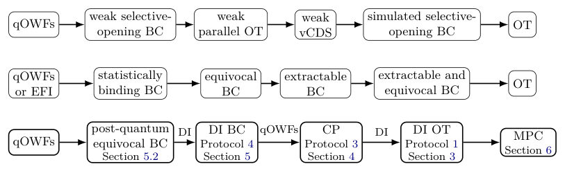
<figcaption class="paper-figure-caption"><b>Fig 1.</b> Figure 1: Reduction chains. The two earlier chains use trusted quantum communication and place no condition on devices; “weak” permits inefficient simulation, vCDS is verifiable conditional disclosure of secrets, and the chain of [BCKM21] also runs from EFI pairs [BCQ23], which need that quantum communication. Ours removes the trusted quantum operations; in exchange, its two DI arrows require fresh isolated batches with bounded leakage (fresh isolated batches, bounded leakage). Its boxes name the protocol and the section that proves each step; the middle arrow is classical outside its BC calls, OT completeness gives MPC, and the commitment also yields coin tossing (Section 5.5).</figcaption>
</figure>
</div>
<p><strong>Summary.</strong> This work presents device-independent protocols for oblivious transfer and bit commitment, ensuring security even when the quantum devices are untrusted and potentially faulty. It achieves robustness by explicitly accounting for information leakage and device faults in two distinct operational regimes. This advances the practical feasibility of quantum cryptography by providing concrete, resilient cryptographic primitives.</p>
<p><strong>Why it may be interesting.</strong> While highly theoretical, the focus on device-independent security and fault tolerance is crucial for realizing quantum technologies in noisy, real-world physical systems.</p>
<details>
<summary>Detailed structure</summary>
<p><strong>Main problem.</strong> The paper addresses the construction of robust and leakage-resilient device-independent (DI) oblivious transfer (OT) and bit commitment (BC) protocols.</p>
<p><strong>Main result.</strong> It successfully constructs DI OT and BC protocols secure against quantum polynomial-time adversaries, which are robust to certain levels of device faults and information leakage.</p>
<p><strong>Method.</strong> The construction relies on a chain of reductions involving a commit-and-prove functionality, utilizing techniques like selector-aware parallel-repetition bounds and classical equivocation.</p>
<p><strong>Model / system.</strong> The security is based on observed correlations from the Magic Square game using untrusted quantum devices in two laboratories, rather than assuming perfect device behavior.</p>
<p><strong>Key observables.</strong> Fault rates (constant or inverse-polylogarithmic), information leakage ($\ell$ qubits), and the security parameter ($\lambda$).</p>
<p><strong>Important parameters / regimes.</strong> The protocols are analyzed in two regimes: isolated laboratories with coordinate-local measurements, or general settings allowing adaptive leakage.</p>
<p><strong>Assumptions / limitations.</strong> The primary assumptions are the existence of post-quantum one-way functions (qOWFs) and the ability to use fresh, isolated batches of device coordinates.</p>
<p><strong>Figures summary.</strong> Figure 1 illustrates the reduction chains, comparing the new work to prior protocols by highlighting the removal of trusted quantum operations and the requirement for bounded leakage.</p>
<p><strong>Paper structure.</strong> The paper develops the security proof by building upon existing DI protocols, detailing the reduction from OT to general secure computation, and providing specific analyses for the commitment and coin tossing functionalities.</p>
</details>
<details>
<summary>Abstract</summary>
<p>Assuming post-quantum one-way functions, we construct device-independent (DI) oblivious transfer (OT) and bit commitment: honest parties use only trusted classical computation to operate untrusted quantum devices, which may share arbitrary entanglement and behave non-IID. Security is simulation-based against quantum polynomial-time adversaries and composes sequentially with efficient simulators. One protocol skeleton serves both, in two regimes. With isolated laboratories and coordinate-local measurements in the honest receiver's device, it tolerates a constant rate of honest-device faults. With polylogarithmically many qubits of adaptive leakage between the laboratories and arbitrary joint measurements, it tolerates an inverse-polylogarithmic rate. Each elementary DI call uses a fresh, isolated batch of polylogarithmically many device coordinates, and total device use in the compiled OT protocol is polynomial. The commitment has efficient simulators against both parties and yields DI coin tossing with abort.   Because OT is complete for secure computation, the construction yields a DI protocol, with abort, for every efficiently computable classical functionality on a fixed number of parties, secure against static corruption of any proper subset of them.   The commitment's extractor changes a public parity relation through classical equivocation and leaves the device execution, hence its leakage, unchanged. A commit-and-prove functionality, disjoint audits, and an affine consistency check link the certified correlations to ideal OT. Sender security rests on a selector-aware parallel-repetition bound for the Magic Square game, which we derive from the two-round threshold theorem of Kundu and Tan.</p>
</details>
<p><sub><a href="#top">↑ back to top</a></sub></p>

<p><a id="paper-2610.01337"></a></p>
<h3 id="robustness-of-the-verwey-transition-against-remanent-strain-induced-defects-in-magnetite"><a href="http://arxiv.org/abs/2610.01337v1">Robustness of the Verwey transition against remanent strain-induced defects in magnetite</a></h3>
<p><strong>Authors:</strong> M. A. Gala, K. J. Grzywa, K. Komędera, R. Zalecki, A. Baczmański, Z. Kąkol, A. Pacanowska, C. M. N. Kumar, R. Rodriguez Lamas, C. Detlefs, C. Yildirim, C. Marin, J. Debray, G. Beutier, L. Ortega, A. Kozłowski, N. Barišić, J. E. Lorenzo, W. Tabiś<br>
<strong>Type:</strong> experiment · <strong>Category:</strong> strongly correlated electrons · <strong>PDF:</strong> <a href="https://arxiv.org/pdf/2610.01337v1">https://arxiv.org/pdf/2610.01337v1</a><br>
<strong>Analysis basis:</strong> full PDF text, analyzed in chunks</p>
<div class="figure-strip-hint">↔ Scroll figures horizontally</div>
<div class="paper-figures-scroll">
<figure class="paper-figure-card">
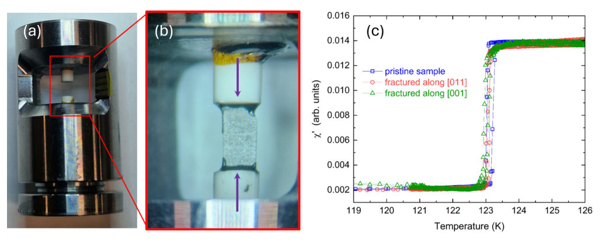
<figcaption class="paper-figure-caption"><b>Fig 1.</b> Figure 1. Uniaxial compression and magnetic characterization of magnetite. (a) Compression device consisting of a cylindrical steel housing and a central piston. (b) Magnetite sample mounted between ceramic posts with Stycast epoxy; purple arrows indicate the direction of applied uniaxial compression. (c) Real part of the ac susceptibility, χ′, for the pristine reference sample and for samples fractured by compression along [011] and [001] directions. Within experimental resolution, the Verwey transition temperature remains unchanged after compression and fracture.</figcaption>
</figure>
<figure class="paper-figure-card">
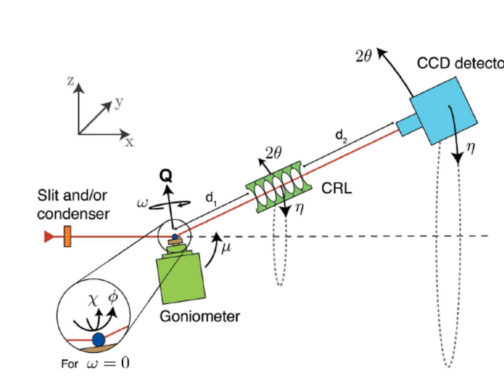
<figcaption class="paper-figure-caption"><b>Fig 2.</b> Figure 2. Schematic of the DFXM setup at the ESRF ID03 beamline. A monochromatic x-ray beam illuminates the sam- ple, which is mounted on a goniometer. A selected Bragg reflection from the cubic {400} family is magnified by com- pound refractive lenses and imaged on a two-dimensional de- tector. Rocking and rolling scans probe lattice misorientation, while scans of 2θ probe local changes in lattice spacing. The DFXM end station at ID03 was relocated and upgraded from the former ID06-HXM instrument [24]. Schematic adapted from Ref. [25].</figcaption>
</figure>
<figure class="paper-figure-card">
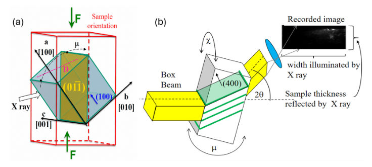
<figcaption class="paper-figure-caption"><b>Fig 3.</b> Figure 3. DFXM geometry used to image the compressed magnetite crystals. (a) Sample orientation relative to the incident x-ray beam. The sample was compressed along [011], with a (01¯1) surface exposed in the DFXM geometry. The cubic (400) reflection was selected for imaging. (b) Schematic of the DFXM optical layout in the box-beam geometry. The vertical direction of the recorded image corresponds to the sample thickness, and the x-ray objective inverts the image, reversing the front and rear sides of the sample.</figcaption>
</figure>
<figure class="paper-figure-card">
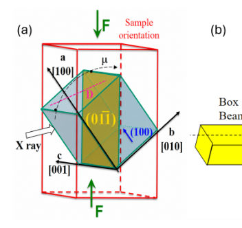
<figcaption class="paper-figure-caption"><b>Fig 4.</b> Figure 4 shows detector images recorded near the max- imum of the (400) Bragg reflection for the pristine ref- erence crystal, the moderately compressed crystal, and the fractured crystal compressed along [011]. These im- ages are not full orientation or strain maps. Instead, they show the spatial distribution of diffracted intensity at the angular setting for which the largest part of the illuminated region satisfies the Bragg condition. They therefore provide a direct visual comparison of the ho- mogeneity of the diffracting volume in the three samples. Quantitative separation of lattice misorientation and ax- ial strain is provided by the maps in Fig. 5. The pristine sample [Fig. 4(a)]...</figcaption>
</figure>
<figure class="paper-figure-card">
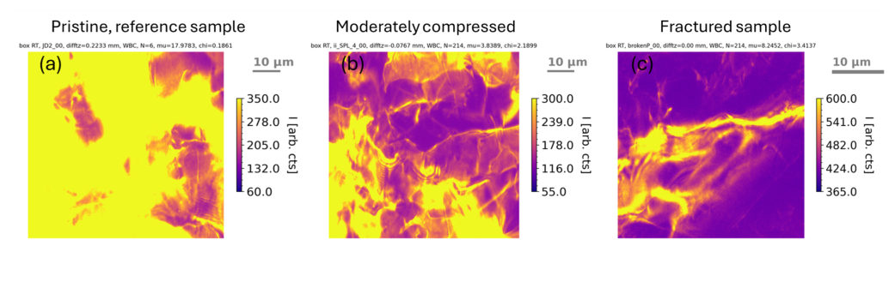
<figcaption class="paper-figure-caption"><b>Fig 5.</b> Figure 4. Recorded DFXM peak images obtained at the optimal µ and χ angles of the (400) reflection after different compression treatments. (a) Pristine reference sample. (b) Sample compressed to 200 MPa along [011] without fracture. (c) Sample compressed along [011] beyond the fracture threshold. The progressively stronger spatial inhomogeneity of the Bragg-peak intensity from (a) to (c) reflects increasing heterogeneity of the diffracting volume after uniaxial compression; the respective contributions of lattice orientation and residual strain are quantified in Fig. 5. The color scale is adjusted independently for each panel and therefore should be used to assess contrast within a given...</figcaption>
</figure>
</div>
<p><strong>Summary.</strong> This experimental study investigates the robustness of the Verwey transition in magnetite when subjected to mechanical stress. By comparing the electronic transition signature with high-resolution imaging of strain-induced defects, the authors conclude that extended slip-related defects do not significantly alter the transition temperature. This work helps distinguish the physical mechanism by which point defects suppress the transition from that caused by extended lattice strain.</p>
<p><strong>Why it may be interesting.</strong> The work provides crucial experimental evidence distinguishing between the coupling mechanisms of different types of lattice disorder (point vs. extended) to the electronic ground state, which is fundamental to understanding correlated electron physics in transition metal oxides.</p>
<details>
<summary>Detailed structure</summary>
<p><strong>Main problem.</strong> To determine how remanent strain fields and extended defect structures, generated by uniaxial stress, affect the Verwey transition in magnetite.</p>
<p><strong>Main result.</strong> The study found that extended line-like defects and remanent strain fields from plastic deformation do not measurably perturb the Verwey transition temperature, distinguishing their effect from point defects.</p>
<p><strong>Method.</strong> The researchers combined dark-field x-ray microscopy (DFXM) to map structural disorder and ac magnetic susceptibility measurements to track the electronic phase transition.</p>
<p><strong>Model / system.</strong> The physical system is stoichiometric single-crystalline magnetite ($   ext{Fe}_3   ext{O}_4$), a material known for its electronically driven Verwey transition, which is sensitive to lattice imperfections.</p>
<p><strong>Key observables.</strong> Verwey transition temperature ($T_V$), transition sharpness, remanent structural disorder (line-like defects, strain fields), and lattice misorientation/strain maps.</p>
<p><strong>Important parameters / regimes.</strong> Uniaxial stress (up to 200 MPa), temperature ramp rate ($\le 0.1$ K/min), and the comparison between point defects vs. extended defects.</p>
<p><strong>Assumptions / limitations.</strong> The study assumes that the observed structural disorder is primarily due to plastic deformation (slip-related) and that the electronic ordering responsible for $T_V$ is sensitive only to the type of disorder, not its density, if the disorder is extended.</p>
<p><strong>Figures summary.</strong> Figures show DFXM contrast images comparing pristine, moderately compressed, and fractured samples, revealing substantial remanent structural disorder. Susceptibility curves confirm that $T_V$ remains unchanged across these mechanically altered samples.</p>
<p><strong>Paper structure.</strong> The paper establishes the problem by noting the sensitivity of $T_V$ to point defects. It then details the experimental procedure involving uniaxial compression and subsequent DFXM/susceptibility measurements. The core of the paper presents the results showing structural disorder without corresponding changes in $T_V$, leading to the conclusion that extended defects are benign compared to point defects.</p>
</details>
<details>
<summary>Abstract</summary>
<p>The Verwey transition in magnetite is a benchmark electronically driven phase transition that is highly sensitive to lattice imperfections and external perturbations. Doping, deviations from oxygen stoichiometry, and irradiation-induced point defects are known to lower the Verwey transition temperature, $T_{\rm V}$. By contrast, the role of remanent strain fields and extended defect structures generated by uniaxial stress has remained largely unexplored. Here we combine dark-field x-ray microscopy (DFXM) and ac magnetic susceptibility to determine how strain-induced defects affect the Verwey transition in stoichiometric single-crystalline magnetite after uniaxial compression and unloading. The DFXM measurements were performed on two samples compressed along the same $[011]$ direction: loading to $200~\mathrm{MPa}$ generated stable line-like defects and remanent strain fields, whereas loading beyond the fracture threshold produced denser defect networks and mechanical fracture. To test the effect of a different loading geometry, we also measured the ac susceptibility of a sample fractured by compression along $[001]$. Real-space DFXM imaging, lattice-orientation mapping, and residual strain mapping show substantial remanent structural disorder after compression. Nevertheless, neither the transition temperature $T_{\rm V}$ nor the sharpness of the transition changes measurably in any of the compressed or fractured samples. This behavior contrasts with the strong suppression of $T_{\rm V}$ by point-like disorder. Our results show that extended line-like defects and remanent strain fields produced by plastic deformation do not measurably perturb the macroscopic electronic ordering responsible for the Verwey transition, thereby distinguishing the effects of point defects from those of extended slip-related defects in magnetite.</p>
</details>
<p><sub><a href="#top">↑ back to top</a></sub></p>

<p><a id="paper-2610.01551"></a></p>
<h3 id="room-temperature-magnetoelastic-coupling-in-uirmath1995mathalmath1996math"><a href="http://arxiv.org/abs/2610.01551v1">Room-temperature Magnetoelastic Coupling in UIr$_4$Al$_{15}$</a></h3>
<p><strong>Authors:</strong> Mingyu Xu, Tomasz Klimczuk, M. Brian Maple, Weiwei Xie<br>
<strong>Type:</strong> experiment · <strong>Category:</strong> strongly correlated electrons · <strong>PDF:</strong> <a href="https://arxiv.org/pdf/2610.01551v1">https://arxiv.org/pdf/2610.01551v1</a><br>
<strong>Analysis basis:</strong> full PDF text, analyzed in chunks</p>
<div class="figure-strip-hint">↔ Scroll figures horizontally</div>
<div class="paper-figures-scroll">
<figure class="paper-figure-card">
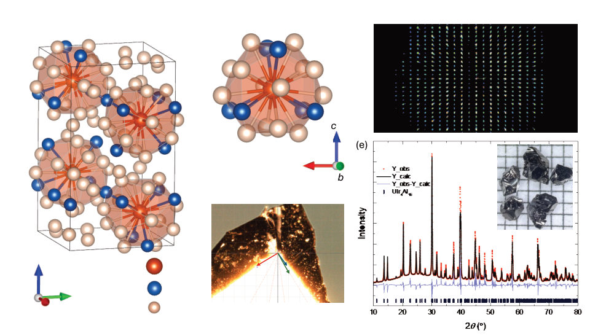
<figcaption class="paper-figure-caption"><b>Fig 1.</b> Figure 1. Crystal structure and structural characterization of UIr4Al15. (a) Crystal structure of UIr4Al15. (b) Local coordination environment of U within the Ir/Al polyhedral cage. (c) Orientation determination of a single crystal by single-crystal X-ray diffraction. The same crystal was subsequently used for magnetic susceptibility measurements. (d) Reconstructed 0kl reciprocal-space plane obtained from single-crystal X- ray diffraction at 300(2) K. (e) Rietveld refinement of powder X-ray diffraction data confirming phase purity. Insets show optical images of as-grown single crystals on millimeter-scale grid paper.</figcaption>
</figure>
<figure class="paper-figure-card">
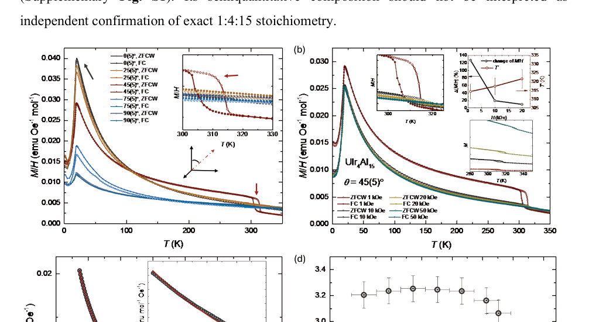
<figcaption class="paper-figure-caption"><b>Fig 2.</b> Figure 2. Magnetic properties of UIr4Al15. (a) Temperature-dependent magnetic susceptibility (M/H) measured under zero-field-cooled warming (ZFCW) and field-cooled (FC) conditions for different magnetic-field orientations within the crystallographic ac-plane. TN denotes the antiferromagnetic transition temperature, while T’ marks the higher-temperature anomaly near 310 K. The magnetic-field orientation angle θ, defined relative to the crystallographic c-axis, is illustrated in the lower inset. The upper-right inset highlights the anisotropic magnetic response between 300 and 320 K. (b) Temperature-dependent magnetic susceptibility measured under different magnetic fields, with the field...</figcaption>
</figure>
<figure class="paper-figure-card">
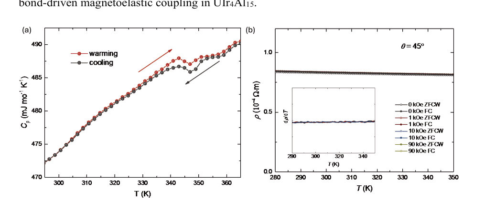
<figcaption class="paper-figure-caption"><b>Fig 3.</b> Figure 3. Specific heat and resistivity of UIr4Al15 in the temperature range above 300 K. (a) Temperature- dependent specific heat, Cp(T), measured under zero magnetic field. (b) Temperature-dependent electrical resistivity measured under magnetic fields of 0, 1, 10, and 90 kOe using zero-field-cooled warming (ZFCW) and field-cooled (FC) protocols. The inset shows the temperature derivative of the electrical resistivity, 𝑑𝑑𝑑𝑑/𝑑𝑑𝑑𝑑, under different magnetic fields.</figcaption>
</figure>
<figure class="paper-figure-card">
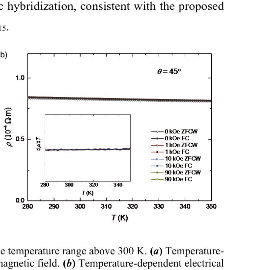
<figcaption class="paper-figure-caption"><b>Fig 4.</b> Fig. 3 presents the heat capacity and electrical transport of UIr4Al15 above room</figcaption>
</figure>
<figure class="paper-figure-card">
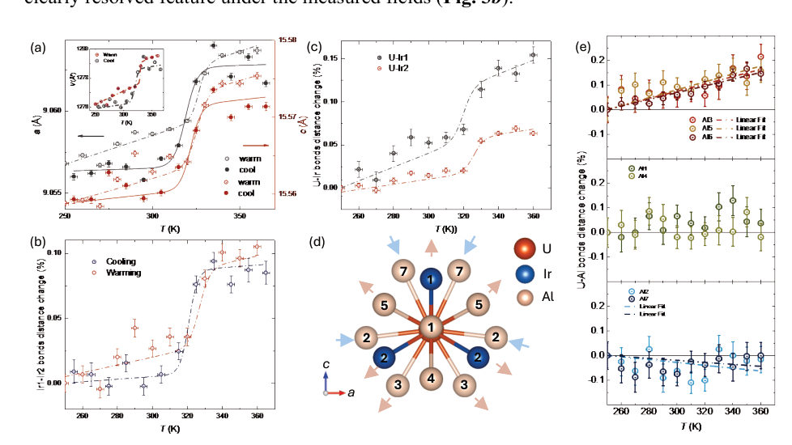
<figcaption class="paper-figure-caption"><b>Fig 5.</b> Figure 4. Temperature-dependent single-crystal X-ray diffraction analysis of UIr4Al15. (a) Temperature dependence of the lattice parameters 𝑎𝑎and 𝑐𝑐measured during warming and cooling between 250 and 370 K. Inset shows the corresponding relative change in unit-cell volume, V/V0, over the same temperature range. (b) Relative change in the Ir1-Ir2 bond distance as a function of temperature during warming and cooling. The abrupt increase near 320-330 K coincides with the magnetic anomaly at T’. (c) Temperature dependence of the relative changes in U-Ir1 and U-Ir2 bond distances. The two inequivalent U-Ir bonds exhibit distinct temperature responses across the transition region, indicating...</figcaption>
</figure>
</div>
<p><strong>Summary.</strong> This experimental work reports on giant magnetoelastic coupling in the uranium compound UIr4Al15, observed slightly above room temperature. By combining single-crystal X-ray diffraction with magnetic measurements, the authors show that the magnetic anomaly correlates precisely with abrupt, anisotropic changes in local atomic bond distances. This establishes the material as a key platform for studying bond-driven magnetoelastic effects in correlated quantum materials.</p>
<p><strong>Why it may be interesting.</strong> The strong coupling between local atomic structure (bond lengths) and magnetism in a bulk metallic system provides a concrete platform for studying how electronic correlations dictate lattice stability, relevant to understanding emergent quantum phases.</p>
<details>
<summary>Detailed structure</summary>
<p><strong>Main problem.</strong> Investigating the origin of a magnetic anomaly near room temperature in the metallic intermetallic compound UIr4Al15, specifically determining if it is driven by magnetoelastic coupling.</p>
<p><strong>Main result.</strong> The magnetic anomaly strongly correlates with abrupt, anisotropic structural changes observed via X-ray diffraction, suggesting a bond-driven magnetoelastic coupling mechanism.</p>
<p><strong>Method.</strong> The study combines temperature-dependent single-crystal X-ray diffraction with anisotropic magnetic susceptibility and specific heat measurements.</p>
<p><strong>Model / system.</strong> The physical system is the uranium-based intermetallic compound UIr4Al15, which is characterized by its crystal structure (P42/nmc) and the interplay between its electronic, magnetic, and structural degrees of freedom.</p>
<p><strong>Key observables.</strong> Lattice parameters, specific chemical bond distances (e.g., U-Ir bonds), magnetic susceptibility (M/H), and specific heat capacity (Cp).</p>
<p><strong>Important parameters / regimes.</strong> The coupling is observed near room temperature (around 310 K), and the analysis focuses on the sensitivity of local bonding to magnetic alignment.</p>
<p><strong>Assumptions / limitations.</strong> The coupling mechanism is attributed to local bonding rearrangements rather than conventional magnetostriction or macroscopic symmetry breaking.</p>
<p><strong>Figures summary.</strong> Figures detail the temperature evolution of lattice parameters and specific bond lengths coinciding with the magnetic anomaly, alongside magnetic susceptibility measurements showing the field-dependent anomaly.</p>
<p><strong>Paper structure.</strong> The paper details synthesis and characterization procedures, followed by measurements of magnetic, structural, and thermal properties across a temperature range spanning from cryogenic to above room temperature, culminating in the correlation between structural and magnetic anomalies.</p>
</details>
<details>
<summary>Abstract</summary>
<p>The interplay between electronic and structural degrees of freedom underpins many emergent phenomena in quantum materials, yet magnetoelastic coupling in metallic systems is typically weak and confined to low temperatures or microscopic length scales. Here, we report giant magnetoelastic coupling slightly above room temperature in the uranium-based intermetallic compound UIr$_4$Al$_{15}$. Using temperature-dependent single-crystal X-ray diffraction together with anisotropic magnetic susceptibility measurements, we directly resolve subtle but reproducible structural distortions coupled to magnetic alignment. Despite the absence of crystallographic symmetry breaking, pronounced anomalies emerge in lattice parameters and selected chemical bond distances near the magnetic transition region, revealing an unusual sensitivity of the crystal structure to magnetic orientation. The coupling enables direct probing of how atomic distances and local chemical bonding govern the electronic and magnetic states in a bulk intermetallic material. Our results establish UIr$_4$Al$_{15}$ as a rare platform in which magnetism and lattice distortions are strongly intertwined near room temperature, opening new opportunities for magnetically responsive quantum materials and functional magnetic sensing applications.</p>
</details>
<p><sub><a href="#top">↑ back to top</a></sub></p>

<p><a id="paper-2610.02060"></a></p>
<h3 id="stark-effect-of-hydrogenic-ions-as-a-test-of-the-indefinite-metric-formalism-of-the-eight-component-relativistic-wave-equation-for-spin-math2001math-particles"><a href="http://arxiv.org/abs/2610.02060v1">Stark effect of hydrogenic ions as a test of the indefinite-metric formalism of the eight-component relativistic wave equation for spin-$\frac{1}{2}$ particles</a></h3>
<p><strong>Authors:</strong> Paulus C. Tjiang, Sylvia H. Sutanto, Vincentius E. W. Tjia<br>
<strong>Type:</strong> theory · <strong>Category:</strong> other · <strong>PDF:</strong> <a href="https://arxiv.org/pdf/2610.02060v1">https://arxiv.org/pdf/2610.02060v1</a><br>
<strong>Analysis basis:</strong> full PDF text, analyzed in chunks</p>
<div class="figure-strip-hint">↔ Scroll figures horizontally</div>
<div class="paper-figures-scroll">
<figure class="paper-figure-card">
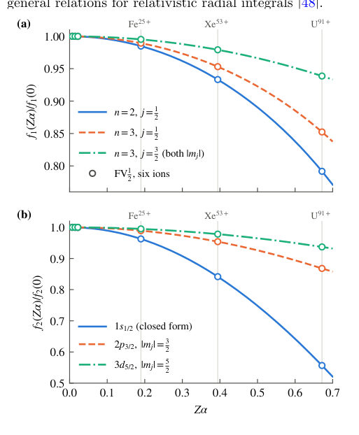
<figcaption class="paper-figure-caption"><b>Fig 1.</b> FIG. 1. Dependence on Zα of the relativistic shifts that remain finite as Zα →0. (a) First-order roots, normal- ized to their values at Zα = 0 ( √</figcaption>
</figure>
<figure class="paper-figure-card">
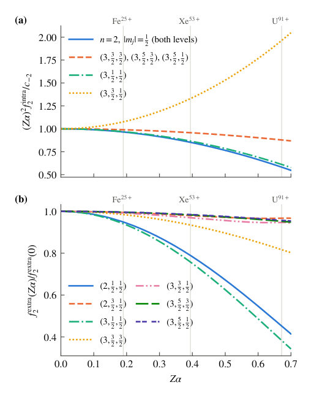
<figcaption class="paper-figure-caption"><b>Fig 2.</b> FIG. 2. The two parts (60) of the second-order shift of the levels with a fine-structure partner. (a) Intra-shell part, mul- tiplied by (Zα)2 and normalized to its singular coefficient c−2. Levels whose only intra-shell coupling is the same radial ma- trix element give the same curve: the two levels of n = 2, |mj| = 1</figcaption>
</figure>
</div>
<p><strong>Summary.</strong> This paper compares the calculation of the Stark effect for hydrogenic ions using three different theoretical frameworks: Schrödinger, Dirac, and the eight-component FV1/2 equation. The authors demonstrate that the FV1/2 formalism successfully reproduces the Dirac results to high precision, confirming its mathematical consistency despite its unusual indefinite metric structure. It serves as a rigorous theoretical check on advanced relativistic quantum mechanics.</p>
<p><strong>Why it may be interesting.</strong> This work is highly relevant to theoretical physics as it rigorously tests the mathematical consistency of advanced relativistic wave equations (like those involving indefinite metrics) against established quantum electrodynamics results.</p>
<details>
<summary>Detailed structure</summary>
<p><strong>Main problem.</strong> The paper tests the validity of the indefinite-metric formalism of the eight-component relativistic wave equation (FV1/2) by comparing its predictions for the Stark effect against the established Dirac theory.</p>
<p><strong>Main result.</strong> The FV1/2 formalism reproduces the Dirac Stark shifts level by level up to second order, confirming its consistency, although the necessity of specific ingredients like spin-field coupling and negative-norm states is highlighted.</p>
<p><strong>Method.</strong> The authors compute first- and second-order Stark shifts using the Dalgarno-Lewis method, comparing results derived from the Schrödinger, Dirac, and FV1/2 equations.</p>
<p><strong>Model / system.</strong> The study focuses on hydrogenic ions (H to U91+), treating the interaction with a static, uniform electric field. The theoretical framework involves comparing three relativistic/nonrelativistic wave equations: Schrödinger, Dirac, and the eight-component FV1/2 equation.</p>
<p><strong>Key observables.</strong> First- and second-order Stark shifts, and comparison of spectral sums across different theoretical formalisms.</p>
<p><strong>Important parameters / regimes.</strong> The calculations cover ions from Hydrogen up to Uranium (U91+), and the results are analyzed in terms of the fine-structure constant (Z\alpha).</p>
<p><strong>Assumptions / limitations.</strong> The primary assumption is that the FV1/2 theory, despite its indefinite metric, should yield results consistent with the Dirac theory when calculating physical observables like the Stark shift.</p>
<p><strong>Figures summary.</strong> The notes reference tables (e.g., Table VIII) that compare the calculated Stark shifts for various intermediate states and whole levels between the Dirac and FV1/2 theories.</p>
<p><strong>Paper structure.</strong> The paper systematically calculates the Stark shifts using perturbation theory, comparing the results obtained from the Schrödinger, Dirac, and FV1/2 equations, focusing on the mathematical consistency of the indefinite-metric approach.</p>
</details>
<details>
<summary>Abstract</summary>
<p>The eight-component relativistic wave equation for spin-$\frac{1}{2}$ particles of Robson and Staudte (FV$\frac{1}{2}$), a Feshbach--Villars linearization of the Feynman--Gell-Mann equation, reproduces the Dirac hydrogenic spectrum with a doubled solution space and an indefinite inner product. Its exact Stark shifts must equal the Dirac ones; whether its indefinite-metric perturbation theory delivers them is not guaranteed. We compute the first- and second-order Stark shifts of the $n=1$--3 levels of hydrogenic ions from H to U$^{91+}$ in the Schrödinger, Dirac and FV$\frac{1}{2}$ theories, evaluating all spectral sums, continuum included, by the Dalgarno--Lewis method. The FV$\frac{1}{2}$ and Dirac shifts coincide level by level, to working precision at first order (closed-form roots) and to 45 significant figures at second order. Both ingredients are needed: without the explicit spin--field coupling the first-order roots become complex, and without the negative-norm states the $(Zα)^2$ coefficient is wrong. Norm sign and parity are locked in the doubled space: a potential lifting the $2s_{1/2}$--$2p_{1/2}$ degeneracy needs its own spin--gradient term, and shifts placed by hand on the $κ$-labeled states give a spurious imaginary linear Stark shift. The relativistic linear Stark effect is smaller by finite factors, but a second-moment sum rule shows the non-relativistic linear Stark strength is conserved, the missing part reappearing in singular $(Zα)^{-2}$ second-order terms. For levels with a fine-structure partner, an exact intra-shell/regular split of the second-order shift gives the $(Zα)^0$ coefficients analytically and relates the $π^2$ terms of the $(Zα)^2$ coefficients to the singular ones. The Dirac weak/strong-field crossover for $n=2$ of hydrogen lies near 2.8~kV cm$^{-1}$, and the perturbative window set by the fine structure grows as $Z^5$.</p>
</details>
<p><sub><a href="#top">↑ back to top</a></sub></p>

<p><a id="paper-2610.00950"></a></p>
<h3 id="sublinear-depth-quantum-simulation-of-electrons-with-atomic-orbitals"><a href="http://arxiv.org/abs/2610.00950v1">Sublinear-depth Quantum Simulation of Electrons with Atomic Orbitals</a></h3>
<p><strong>Authors:</strong> Jakob Günther, Aram W. Harrow<br>
<strong>Type:</strong> theory · <strong>Category:</strong> strongly correlated electrons · <strong>PDF:</strong> <a href="https://arxiv.org/pdf/2610.00950v1">https://arxiv.org/pdf/2610.00950v1</a><br>
<strong>Analysis basis:</strong> full PDF text, analyzed in chunks</p>
<div class="figure-strip-hint">↔ Scroll figures horizontally</div>
<div class="paper-figures-scroll">
<figure class="paper-figure-card">
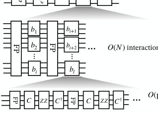
<figcaption class="paper-figure-caption"><b>Fig 1.</b> FIG. 1: Top: Hierarchical decomposition in 2D. Bottom: Structure of the simulation algorithm.</figcaption>
</figure>
<figure class="paper-figure-card">
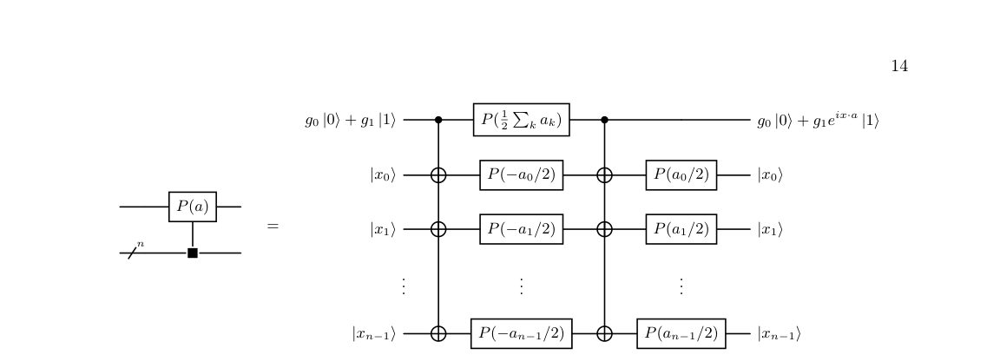
<figcaption class="paper-figure-caption"><b>Fig 2.</b> FIG. 2: An implementation of the multi-controlled phase gate in logarithmic depth. The fan-out gate can be implemented in logarithmic depth [59]. The single-qubit phase gate is defined as P(θ) = |0⟩⟨0| + eiθ |1⟩⟨1|.</figcaption>
</figure>
<figure class="paper-figure-card">
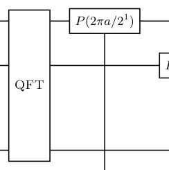
<figcaption class="paper-figure-caption"><b>Fig 3.</b> FIG. 3: Quantum circuit performing the addition |w⟩|x⟩→|w + x · a (mod 2na)⟩|x⟩based on Fourier-arithmetic.</figcaption>
</figure>
</div>
<p><strong>Summary.</strong> This paper presents a method to simulate electronic structure Hamiltonians defined by atomic orbitals on a quantum computer. By combining techniques like the Fast Multipole Method and specialized quantum arithmetic circuits, the authors achieve a sublinear simulation depth scaling. This result significantly improves the known resource estimates for simulating complex many-body quantum systems.</p>
<p><strong>Why it may be interesting.</strong> This work provides a concrete, highly optimized quantum algorithm for simulating electronic structure, which is a cornerstone problem in condensed matter physics and quantum chemistry, directly addressing resource scaling.</p>
<details>
<summary>Detailed structure</summary>
<p><strong>Main problem.</strong> The core problem is efficiently simulating the time evolution of electronic structure Hamiltonians defined on a basis of atomic orbitals on a quantum computer.</p>
<p><strong>Main result.</strong> The authors demonstrate that the Trotter step for these Hamiltonians can be implemented in sublinear depth, achieving a total gate count scaling of $N^{5/3+o(1)}$, matching the best known scaling for any basis.</p>
<p><strong>Method.</strong> The approach combines rigorous analysis of orbital localization, a hierarchical Hamiltonian decomposition inspired by the Fast Multipole Method (FMM), and the use of shallow quantum Fourier arithmetic circuits for efficient circuit depth.</p>
<p><strong>Model / system.</strong> The system models electrons in molecules or materials, using an atomic orbital basis $\{\phi_p\}_{p=1}^N$. The Hamiltonian $H$ is derived from these orbitals and is analyzed in the thermodynamic limit.</p>
<p><strong>Key observables.</strong> Simulation depth and total gate count required to achieve a target precision $\epsilon$ for the time evolution $e^{-iHt}$.</p>
<p><strong>Important parameters / regimes.</strong> System size $N$ (number of orbitals), simulation time $t$, and accuracy $\epsilon$. The analysis relies on decay parameters $\zeta, eta, \delta$ characterizing the orbital basis.</p>
<p><strong>Assumptions / limitations.</strong> The work assumes the existence of sufficiently localized orthonormal orbital bases and focuses on the thermodynamic limit ($\delta>0$, $L$ constant) to avoid continuum limit issues.</p>
<p><strong>Figures summary.</strong> Figures illustrate the quantum circuits for modular addition and multi-controlled phase gates, detailing the logarithmic depth implementation of arithmetic operations.</p>
<p><strong>Paper structure.</strong> The paper builds from establishing the necessary decay properties of the overlap matrix (using matrix function analysis) to implementing the time evolution via Trotterization. Key steps include Hamiltonian decomposition (FMM), proving the decay of inverse operators ($S^{-1/2}$), and finally constructing the low-depth quantum circuit for the Trotter step.</p>
</details>
<details>
<summary>Abstract</summary>
<p>Discretizing electronic degrees of freedom into atomic orbitals is the default choice to accurately model electrons in molecules in a compact and flexible way. We consider the task of simulating such electronic structure models on a quantum computer for $N$ orbitals, keeping the number of orbitals per atom constant. Atomic orbitals give rise to Hamiltonians with potentially up to $\mathcal{O}(N^4)$ terms and little structure, which made it challenging to match the complexity of methods based on plane waves and real-space grids. In this work, we show that a Trotter step for atomic orbitals can be implemented in depth $\mathcal{O}(\mathrm{polylog}(N))$ without ancillas by combining a rigorous treatment of orbital localization, a hierarchical Hamiltonian decomposition based on the Fast Multipole Method, and shallow quantum Fourier arithmetic circuits. By bounding the Trotter error, we obtain sublinear simulation depth, and our total gate count $N^{5/3 + o(1)}$ matches the best scaling known for any basis.</p>
</details>
<p><sub><a href="#top">↑ back to top</a></sub></p>

<p><a id="paper-2610.01901"></a></p>
<h3 id="superintegrability-of-a-resonant-ghostly-tri-hamiltonian-model-polynomial-first-integrals-and-transcendental-completion"><a href="http://arxiv.org/abs/2610.01901v1">Superintegrability of a resonant ghostly tri-Hamiltonian model: polynomial first integrals and transcendental completion</a></h3>
<p><strong>Authors:</strong> Andreas Fring, Ian Marquette<br>
<strong>Type:</strong> theory · <strong>Category:</strong> other · <strong>PDF:</strong> <a href="https://arxiv.org/pdf/2610.01901v1">https://arxiv.org/pdf/2610.01901v1</a><br>
<strong>Analysis basis:</strong> full PDF text, analyzed in chunks</p>
<div class="figure-strip-hint">↔ Scroll figures horizontally</div>
<div class="paper-figures-scroll">
<figure class="paper-figure-card">
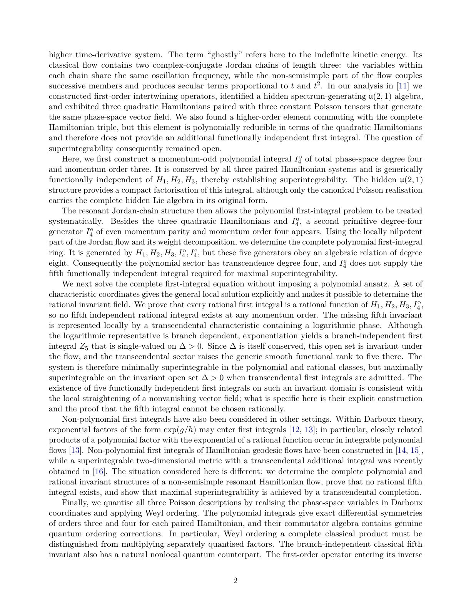
<figcaption class="paper-figure-caption"><b>Fig 1.</b> Low-resolution page preview, page 2</figcaption>
</figure>
<figure class="paper-figure-card">
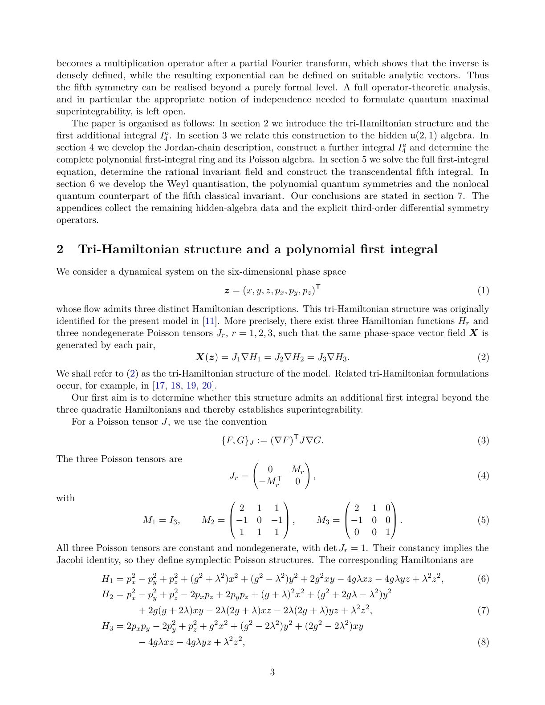
<figcaption class="paper-figure-caption"><b>Fig 2.</b> Low-resolution page preview, page 3</figcaption>
</figure>
<figure class="paper-figure-card">
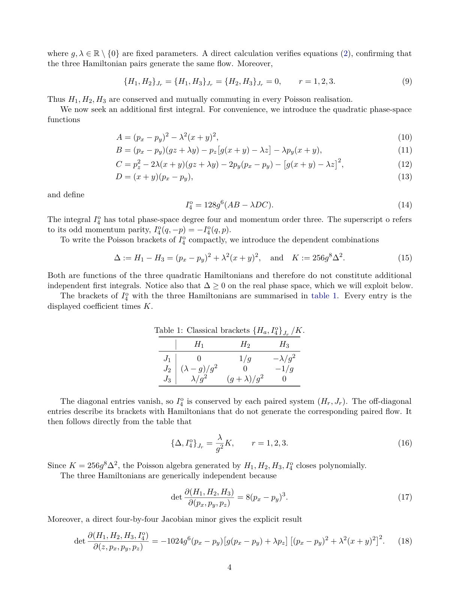
<figcaption class="paper-figure-caption"><b>Fig 3.</b> Low-resolution page preview, page 4</figcaption>
</figure>
<figure class="paper-figure-card">
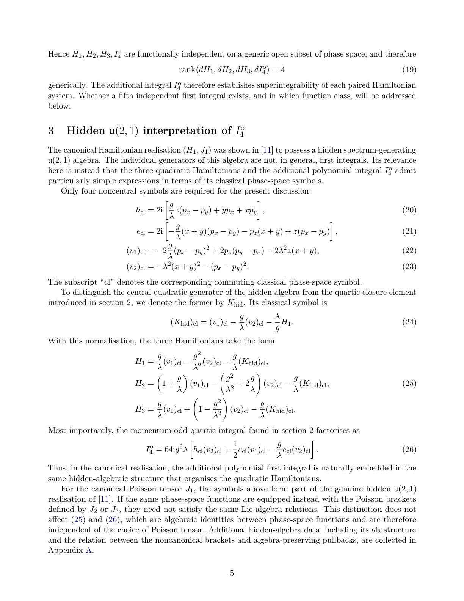
<figcaption class="paper-figure-caption"><b>Fig 4.</b> Low-resolution page preview, page 5</figcaption>
</figure>
<figure class="paper-figure-card">
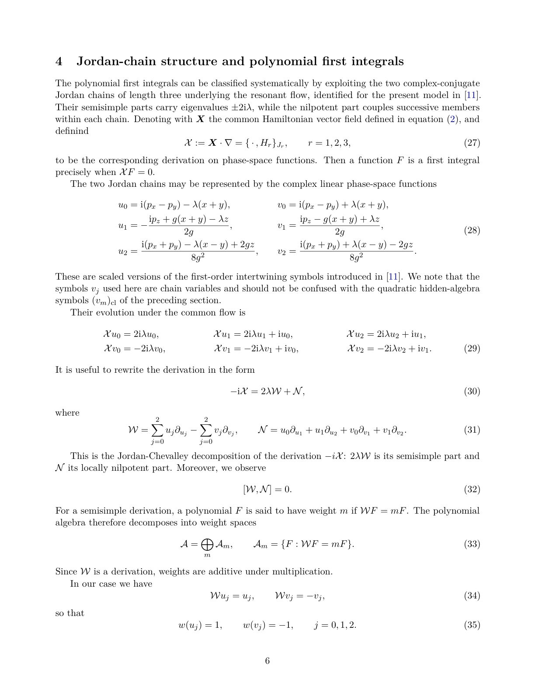
<figcaption class="paper-figure-caption"><b>Fig 5.</b> Low-resolution page preview, page 6</figcaption>
</figure>
</div>
<p><strong>Summary.</strong> This paper investigates the superintegrability of a complex, resonant three-dimensional Hamiltonian system possessing a tri-Hamiltonian structure. The authors prove that while the system has a finite number of polynomial and rational integrals, it achieves maximal superintegrability when considering transcendental invariants. This work provides a detailed mathematical characterization of integrability in such exotic physical models.</p>
<p><strong>Why it may be interesting.</strong> The rigorous mathematical framework for establishing maximal superintegrability, especially the transition from polynomial to transcendental integrals, provides a powerful theoretical tool applicable to complex Hamiltonian systems in physics.</p>
<details>
<summary>Detailed structure</summary>
<p><strong>Main problem.</strong> The study focuses on determining the classical and quantum superintegrability of a specific, resonant three-dimensional Hamiltonian system.</p>
<p><strong>Main result.</strong> The system is found to be minimally superintegrable in the polynomial and rational classes, but achieves maximal superintegrability when transcendental first integrals are admitted.</p>
<p><strong>Method.</strong> The authors employed techniques from classical mechanics, including finding polynomial first integrals via Poisson bracket analysis, and quantum mechanics using Weyl quantization.</p>
<p><strong>Model / system.</strong> The model is a resonant ghostly tri-Hamiltonian system, characterized by three mutually commuting quadratic Hamiltonians ($H_1, H_2, H_3$) and an indefinite kinetic energy structure.</p>
<p><strong>Key observables.</strong> Polynomial first integrals ($I_4^{
m o}, I_4^{
m e}$), the functional rank of the invariant field (4 for rational, 5 for transcendental), and higher-order differential symmetries.</p>
<p><strong>Important parameters / regimes.</strong> The system depends on fixed parameters $g$ and $\lambda$, and the analysis is restricted to an invariant open set $\Delta > 0$.</p>
<p><strong>Assumptions / limitations.</strong> The analysis assumes the existence of a hidden $u(2, 1)$ algebra structure underlying the Poisson relations, and the quantum completion relies on the existence of a nonlocal quantum counterpart for the transcendental invariant.</p>
<p><strong>Figures summary.</strong> No specific figure summaries were extracted, but the notes detail the construction of integrals using specific polynomial forms (e.g., $I_{o4}$).</p>
<p><strong>Paper structure.</strong> The paper systematically establishes the conservation laws by finding polynomial integrals ($I_{o4}, I_{e4}$), determines the transcendence degree of the rational invariant field, and then extends the analysis to transcendental invariants to prove maximal superintegrability, concluding with the quantum realization of these symmetries.</p>
</details>
<details>
<summary>Abstract</summary>
<p>We study classical and quantum superintegrability of a resonant three-dimensional Hamiltonian with indefinite kinetic energy and three Poisson descriptions of the same flow. Besides three commuting quadratic Hamiltonians, the polynomial first-integral ring contains two primitive degree-four generators, $I_4^{\rm o}$ and $I_4^{\rm e}$, of odd and even momentum parity. A single octic relation leaves the polynomial invariant ring with transcendence degree four. Solving the complete first-integral equation shows that every rational first integral is a rational function of $H_1,H_2,H_3,I_4^{\rm o}$, so that the rational invariant field likewise has generic functional rank four. A branch-free transcendental invariant raises the generic smooth functional rank to five on the invariant open set $Δ>0$. The system is therefore minimally superintegrable in the polynomial and rational classes and maximally superintegrable on this invariant domain when transcendental integrals are admitted. Weyl quantisation yields exact higher-order differential symmetries in all three Poisson realisations. The branch-free fifth classical invariant also admits a densely defined nonlocal quantum counterpart, providing a concrete quantum realisation of the transcendental completion.</p>
</details>
<p><sub><a href="#top">↑ back to top</a></sub></p>

<p><a id="paper-2610.01880"></a></p>
<h3 id="symmetry-considerations-in-chirality-induced-spin-selectivity"><a href="http://arxiv.org/abs/2610.01880v1">Symmetry considerations in chirality-induced spin selectivity</a></h3>
<p><strong>Authors:</strong> Dmitry Budker, Angela Wittmann<br>
<strong>Type:</strong> theory · <strong>Category:</strong> other · <strong>PDF:</strong> <a href="https://arxiv.org/pdf/2610.01880v1">https://arxiv.org/pdf/2610.01880v1</a><br>
<strong>Analysis basis:</strong> full PDF text, analyzed in chunks</p>
<div class="figure-strip-hint">↔ Scroll figures horizontally</div>
<div class="paper-figures-scroll">
<figure class="paper-figure-card">
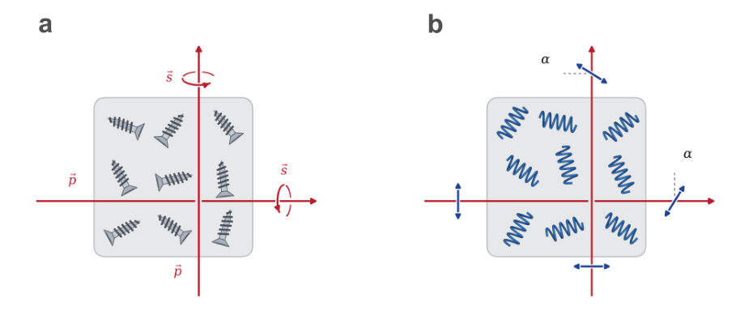
<figcaption class="paper-figure-caption"><b>Fig 1.</b> FIG. 1. Chirality as a pseudoscalar. (a) A medium of randomly oriented right-handed screws has</figcaption>
</figure>
<figure class="paper-figure-card">
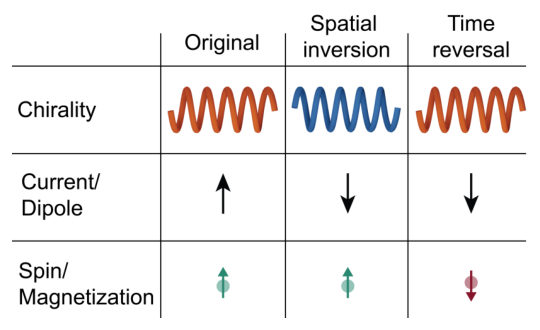
<figcaption class="paper-figure-caption"><b>Fig 2.</b> FIG. 2. Behavior of various quantities with respect to discrete transformations. With respect to</figcaption>
</figure>
<figure class="paper-figure-card">

<figcaption class="paper-figure-caption"><b>Fig 3.</b> FIG. 3. Schematic illustration of the dynamic CISS effect: electron spins “pushed” through achiral</figcaption>
</figure>
<figure class="paper-figure-card">

<figcaption class="paper-figure-caption"><b>Fig 4.</b> FIG. 4. Schematic illustration of the magneto-chiral effect: applying a chiral overlayer on top of a</figcaption>
</figure>
</div>
<p><strong>Summary.</strong> This theoretical work re-examines the CISS effect by imposing fundamental symmetry constraints, arguing that the effect's description must incorporate chirality ($\chi$) to remain consistent with symmetries like parity and time-reversal. By framing CISS within the language of symmetry invariants, the authors provide a powerful conceptual framework for interpreting related quantum transport experiments.</p>
<p><strong>Why it may be interesting.</strong> While the core topic is condensed matter spintronics, the rigorous application of fundamental symmetry principles (P, T) to constrain a complex quantum transport phenomenon is highly relevant to theoretical physics.</p>
<details>
<summary>Detailed structure</summary>
<p><strong>Main problem.</strong> The paper aims to establish a unified, fundamental understanding of the Chirality-Induced Spin Selectivity (CISS) effect by grounding its description in symmetry principles.</p>
<p><strong>Main result.</strong> The authors demonstrate that the CISS effect, when properly formulated using rotational invariants, does not violate fundamental symmetries like parity (P) or time-reversal (T).</p>
<p><strong>Method.</strong> The analysis relies on symmetry considerations (P, T) and the construction of rotational invariants to characterize the correlation between structural chirality ($\chi$) and spin/current polarization ($\vec{s} \cdot \vec{J}$).</p>
<p><strong>Model / system.</strong> The study focuses on the CISS effect in both dynamic (current-driven) and quasi-static (overlayer interaction) scenarios involving chiral materials.</p>
<p><strong>Key observables.</strong> Spin polarization ($\vec{s} \cdot \vec{J}$) and the chirality-dependent correlation $\chi\vec{s} \cdot \vec{J}$.</p>
<p><strong>Important parameters / regimes.</strong> Structural chirality ($\chi$), Parity (P), and Time-Reversal (T) symmetry operations.</p>
<p><strong>Assumptions / limitations.</strong> The primary assumption is that the underlying physics can be robustly described by symmetry constraints, although the invariants do not yield a quantitative prediction of the magnitude.</p>
<p><strong>Figures summary.</strong> Figures illustrate chirality as a pseudoscalar (e.g., screws, optical rotation) and summarize how various physical quantities transform under discrete symmetries (P, T).</p>
<p><strong>Paper structure.</strong> The paper progresses by first identifying the empirical correlation ($\vec{s} \cdot \vec{J}$), then showing its symmetry deficiencies, and finally proposing the symmetry-constrained invariant ($\chi\vec{s} \cdot \vec{J}$) to provide a robust conceptual foundation.</p>
</details>
<details>
<summary>Abstract</summary>
<p>The chirality-induced spin selectivity (CISS) effect, the coupling between structural chirality and electron spin polarization, has been experimentally observed across many diverse systems. However, despite extensive theoretical effort, a unified mechanistic understanding remains elusive. In this perspective, we demonstrate how some of the basic properties of the fascinating effects of CISS can be understood based on straightforward symmetry considerations commonly employed in fundamental particle physics. In particular, we show that CISS does not violate any fundamental symmetries including parity and time-reversal. By anchoring CISS within the universal language of symmetry, we offer a robust conceptual foundation for interpreting experiments and guiding future theoretical and experimental designs.</p>
</details>
<p><sub><a href="#top">↑ back to top</a></sub></p>

<p><a id="paper-2610.00624"></a></p>
<h3 id="the-ericson-transition-in-time-reversal-invariant-systems-symplectically-invariant-hamiltonians"><a href="http://arxiv.org/abs/2610.00624v1">The Ericson Transition in Time-Reversal Invariant Systems: Symplectically Invariant Hamiltonians</a></h3>
<p><strong>Authors:</strong> Simon Köhnes, Thomas Guhr<br>
<strong>Type:</strong> theory · <strong>Category:</strong> statistical mechanics · <strong>PDF:</strong> <a href="https://arxiv.org/pdf/2610.00624v1">https://arxiv.org/pdf/2610.00624v1</a><br>
<strong>Analysis basis:</strong> full PDF text, analyzed in chunks</p>
<div class="figure-strip-hint">↔ Scroll figures horizontally</div>
<div class="paper-figures-scroll">
<figure class="paper-figure-card">

<figcaption class="paper-figure-caption"><b>Fig 1.</b> FIG. 1: Numerical simulation and the distributions of rescaled scattering matrix elements and cross sections (top) for Ξ = 1.57 and M = 30, T1 = T2 = 1. Numerical simulation and subleading order term F(sl)(ξ1) of the CDF and full joint distribution (bottom).</figcaption>
</figure>
<figure class="paper-figure-card">

<figcaption class="paper-figure-caption"><b>Fig 2.</b> FIG. 2: Numerical simulation and the distributions of rescaled scattering matrix elements, cross sections and joint distribution for Ξ = 9.23 and M = 60, Tc = 1 for all channels.</figcaption>
</figure>
</div>
<p><strong>Summary.</strong> This theoretical work analyzes the statistical distribution of scattering matrix elements in the Ericson regime for time-reversal invariant systems. Using advanced asymptotic methods, the authors derive the leading Gaussian/exponential behavior and calculate the subleading corrections. This provides a quantitative understanding of how quantum transport properties behave near resonance overlap.</p>
<p><strong>Why it may be interesting.</strong> The study of scattering resonances and the Ericson regime is crucial for understanding transport properties in disordered or complex quantum systems, linking random matrix theory to mesoscopic physics.</p>
<details>
<summary>Detailed structure</summary>
<p><strong>Main problem.</strong> The paper investigates the asymptotic distribution of off-diagonal scattering matrix elements and cross-sections in the Ericson regime for time-reversal invariant quantum systems.</p>
<p><strong>Main result.</strong> The leading-order behavior of these distributions is proven to be Gaussian or exponential, and the subleading-order correction is derived, showing the transition occurs rapidly.</p>
<p><strong>Method.</strong> The analysis employs the universal Heidelberg approach, utilizing asymptotic expansions in powers of $1/\Xi$ and evaluating complex multi-dimensional integrals via Laplace transforms and Bessel function identities.</p>
<p><strong>Model / system.</strong> The system models scattering phenomena described by a unitary scattering matrix $S$ for time-reversal invariant Hamiltonians drawn from Gaussian Ensembles, specifically focusing on the symplectic case ($eta=4$).</p>
<p><strong>Key observables.</strong> Distributions $P_s(x_s)$ of real/imaginary parts of $S$-matrix elements and the cross-section $\sigma_{ab} = |S_{ab}|^2$.</p>
<p><strong>Important parameters / regimes.</strong> The dimensionless parameter $\Xi = \Gamma/D$, which characterizes the Ericson transition regime.</p>
<p><strong>Assumptions / limitations.</strong> The derivation relies on asymptotic expansions in $1/\Xi$ and involves approximations for small parameters ($p'$).</p>
<p><strong>Figures summary.</strong> Figures compare numerical simulations of the distributions (for specific $\Xi$ values) against the derived analytical results, confirming agreement.</p>
<p><strong>Paper structure.</strong> The paper builds mathematically by first establishing the characteristic function, deriving its asymptotic expansion, and then calculating the leading and subleading order corrections to the distribution functions using advanced integral techniques.</p>
</details>
<details>
<summary>Abstract</summary>
<p>We investigate the distributions of off-diagonal scattering matrix elements and cross-sections in the Ericson regime for time-reversal invariant systems with odd spin. Within the universal Heidelberg approach we prove that Gaussian and exponential behavior is found as the leading-order term of an asymptotic expansion of the aforementioned distributions. Furthermore, the subleading-order term is derived and compared with numerical simulations.</p>
</details>
<p><sub><a href="#top">↑ back to top</a></sub></p>

<p><a id="paper-2610.01578"></a></p>
<h3 id="the-hidden-advantage-of-mask-resampling-a-theory-of-masked-autoencoders"><a href="http://arxiv.org/abs/2610.01578v1">The hidden advantage of mask resampling: a theory of masked autoencoders</a></h3>
<p><strong>Authors:</strong> Jorge Medina Moreira, Lorenzo Bardone, Lenka Zdeborová<br>
<strong>Type:</strong> theory · <strong>Category:</strong> disordered systems and neural networks · <strong>PDF:</strong> <a href="https://arxiv.org/pdf/2610.01578v1">https://arxiv.org/pdf/2610.01578v1</a><br>
<strong>Analysis basis:</strong> full PDF text, analyzed in chunks</p>
<div class="figure-strip-hint">↔ Scroll figures horizontally</div>
<div class="paper-figures-scroll">
<figure class="paper-figure-card">

<figcaption class="paper-figure-caption"><b>Fig 1.</b> Figure 1: Isolating mask resampling reveals its contribution to representation learning. Downstream accuracy versus masking ratio ρ for dynamic masking (blue), static masking (yellow), and unmasked reconstruction (red). (a) Shallow autoencoder on spiked model (Sec. 2); curves are theory and markers are simulations. (b) CNN autoencoder on CIFAR-10 (test top-1). (c) ViT-Base on ImageNet-100 (validation top-5). In (b,c), blue and yellow curves use no stochastic cropping or flipping. The purple reference includes cropping and flipping with dynamic mask resampling at ρ = 0.625 (b) and ρ = 0.75 (c). At suitable masking ratios, resampling alone reaches comparable accuracy. Bars and shading show ±1...</figcaption>
</figure>
<figure class="paper-figure-card">

<figcaption class="paper-figure-caption"><b>Fig 2.</b> Figure 2: Masking recovers a feature that PCA misses. Cosine similarity versus sample complexity α = n/d, for (a) homogeneous noise, γ = 1; (b) bounded heterogeneous noise, γ = 1</figcaption>
</figure>
<figure class="paper-figure-card">

<figcaption class="paper-figure-caption"><b>Fig 3.</b> Figure 3: Replica predictions track learning across mask diversity. Cosine similarity (top) and downstream classification accuracy (bottom) versus sample complexity α = n/d under bounded heterogeneous noise (variance distribution of Fig. 2(b)), for linear, ReLU, ELU, and tanh activations. Colors distinguish K =1(static), 2, 4 and the dynamic masking limit. Solid curves are replica predictions and markers are finite-dimensional simulations. Green curves show the Bayes-optimal pretraining reference, evaluated with the same logistic probe for the lower row; green diamonds show AMP results (Apps. F.5 and H.14). Error bars show ±1 SD. See App. H for experimental details.</figcaption>
</figure>
<figure class="paper-figure-card">

<figcaption class="paper-figure-caption"><b>Fig 4.</b> Fig. 3 compares these predictions with numerical training at finite dimension. Across the tested activations, increasing mask diversity K lowers the weak recovery threshold and improves alignment above the transition in the settings shown. The replica predictions capture not only these threshold shifts, but also the magnitude and α-dependence of the cosine similarity over the displayed range. The theory also captures training and test errors (Fig. 10). Thus the analysis quantifies how mask resampling changes the representation learned from a given number of examples.</figcaption>
</figure>
<figure class="paper-figure-card">

<figcaption class="paper-figure-caption"><b>Fig 5.</b> Figure 4: Finite mask diversity interpolates between static and dynamic training. Downstream accuracy versus masking ratio for (a) the solvable model, with theoretical curves and simulation markers, and (b) a CNN autoencoder on CIFAR-10. Increasing K improves accuracy in the settings shown, and the curves approach the dynamic masking reference. The number of training samples is held fixed. Bars and shading show ±1 SD across seeds; see App. H for details.</figcaption>
</figure>
</div>
<p><strong>Summary.</strong> This work provides a rigorous theoretical analysis demonstrating that masked prediction objectives are statistically superior to standard reconstruction methods for learning useful representations. It quantifies that increasing the diversity of masks used during training significantly improves feature recovery and reduces the required data sample size. The findings guide practitioners by separating the benefit of the prediction task itself from the benefit of mask diversity.</p>
<p><strong>Why it may be interesting.</strong> While focused on ML, the rigorous theoretical framework for separating signal recovery from noise structure, especially in high dimensions, shares mathematical parallels with understanding order parameters and signal extraction in complex physical systems.</p>
<details>
<summary>Detailed structure</summary>
<p><strong>Main problem.</strong> The paper theoretically investigates why masked prediction (MAE) learns superior representations compared to unmasked reconstruction, and quantifies the statistical advantage gained from using diverse masks (mask resampling).</p>
<p><strong>Main result.</strong> Masked linear reconstruction can recover a shared latent feature at sample complexities where unmasked reconstruction (PCA) fails, and increasing mask diversity significantly lowers the required sample complexity.</p>
<p><strong>Method.</strong> The authors develop a high-dimensional statistical theory, employing replica calculations to analyze feature recovery and downstream performance in a structured data model.</p>
<p><strong>Model / system.</strong> The analysis uses a high-dimensional data model featuring a shared latent direction corrupted by heterogeneous, coordinate-wise nuisance noise, mimicking modern deep learning architectures like MAEs.</p>
<p><strong>Key observables.</strong> Latent feature recovery (cosine similarity $   heta_{u^\star}$), sample complexity ($\alpha = n/d$), and downstream classification accuracy.</p>
<p><strong>Important parameters / regimes.</strong> Masking ratio ($
ho$), mask diversity ($K$), and the ratio of samples to dimensions ($\alpha$).</p>
<p><strong>Assumptions / limitations.</strong> The theory is developed for a specific high-dimensional model with a shared latent structure and heterogeneous noise, and comparisons are made in the proportional limit $n, d 	o \infty$.</p>
<p><strong>Figures summary.</strong> Figures compare downstream accuracy vs. masking ratio, showing dynamic masking's advantage; other figures track MSE and accuracy across different masking protocols and training schedules.</p>
<p><strong>Paper structure.</strong> The paper progresses from establishing the theoretical advantage of masked prediction over unmasked reconstruction, to quantifying the benefit of mask diversity, and finally to empirically testing these findings across various augmentation and training protocols.</p>
</details>
<details>
<summary>Abstract</summary>
<p>Why can masked prediction learn useful representations that unmasked reconstruction misses? We study this question in a high-dimensional model of a masked autoencoder (MAE) trained on data with shared latent structure and heterogeneous noise. We prove that masked linear reconstruction can recover the latent feature at linear sample complexity in regimes where unmasked linear reconstruction, equivalent to PCA, fails. The analysis also quantifies the statistical advantage of mask resampling, an established ingredient of masked pretraining. By introducing a fixed collection of $K$ masks per sample, we characterize its effect on feature recovery and downstream performance, identifying regimes where greater mask diversity lowers sample complexity. Guided by this prediction, we find that random cropping and flipping in standard image-training pipelines can obscure the advantage of mask resampling by renewing the prediction task even when the patch mask is fixed. Removing these transformations reveals a downstream advantage for dynamic over static masking in CNN autoencoders and vision transformers. A complementary BERT pilot finds benefits from greater mask diversity on downstream language tasks. Our results separate the benefit of the masked prediction objective from that of mask diversity, and show how a tractable theory can guide experiments that uncover advantages hidden by standard training practices.</p>
</details>
<p><sub><a href="#top">↑ back to top</a></sub></p>

<p><a id="paper-2610.02154"></a></p>
<h3 id="the-robustness-of-qac0"><a href="http://arxiv.org/abs/2610.02154v1">The Robustness of QAC0</a></h3>
<p><strong>Authors:</strong> Daniel Grier, Jackson Morris, Kewen Wu<br>
<strong>Type:</strong> theory · <strong>Category:</strong> quantum information and computing · <strong>PDF:</strong> <a href="https://arxiv.org/pdf/2610.02154v1">https://arxiv.org/pdf/2610.02154v1</a><br>
<strong>Analysis basis:</strong> full PDF text, analyzed in chunks</p>
<div class="figure-strip-hint">↔ Scroll figures horizontally</div>
<div class="paper-figures-scroll">
<figure class="paper-figure-card">

<figcaption class="paper-figure-caption"><b>Fig 1.</b> Figure 1: The LCU circuit L = (PREP† ⊗I) ◦SEL ◦(PREP ⊗I) for (1/2)Uθ.</figcaption>
</figure>
<figure class="paper-figure-card">

<figcaption class="paper-figure-caption"><b>Fig 2.</b> Figure 3: Hamming weight vs. acceptance probability of Ω(n2) parallel W-tests.</figcaption>
</figure>
<figure class="paper-figure-card">

<figcaption class="paper-figure-caption"><b>Fig 3.</b> Figure 4: If C computes EX↑nk</figcaption>
</figure>
</div>
<p><strong>Summary.</strong> This paper rigorously analyzes the quantum complexity class QAC0, demonstrating its computational power by showing it can exactly simulate classical classes like $    ext{TC}^0$. Furthermore, it proves that QAC0 is robust to restrictions on its gate set, suggesting that its power is not dependent on having access to every possible single-qubit gate.</p>
<p><strong>Why it may be interesting.</strong> The rigorous characterization of quantum complexity classes like QAC0 is fundamental to understanding the limits of quantum computation, which underpins the theoretical framework for quantum simulation in AMO physics.</p>
<details>
<summary>Detailed structure</summary>
<p><strong>Main problem.</strong> The paper investigates the robustness of the quantum complexity class QAC0 concerning error tolerance and restrictions on the available single-qubit gates.</p>
<p><strong>Main result.</strong> QAC0 can exactly simulate TC0 with polynomially many copies of the classical input, and it maintains quantum advantage even with zero error ($ ext{EQAC}^0 
ot\subset   ext{AC}^0[p]$).</p>
<p><strong>Method.</strong> The authors use novel applications of exact amplitude amplification to eliminate inherent errors in quantum tests and demonstrate gate synthesis by approximating arbitrary single-qubit gates with a restricted set.</p>
<p><strong>Model / system.</strong> The model is quantum computation defined by QAC0 circuits, which utilize generalized Toffoli gates and arbitrary single-qubit gates, operating on quantum states.</p>
<p><strong>Key observables.</strong> Computational power relative to classical classes ($   ext{AC}^0[p]$, $    ext{TC}^0$), error rates, and the ability to compute specific functions like the $  ext{EX}_{n/2}$ test and selectors.</p>
<p><strong>Important parameters / regimes.</strong> Circuit depth ($d$), polynomial size ($s$), error tolerance ($\epsilon$), and the number of input copies ($m$).</p>
<p><strong>Assumptions / limitations.</strong> The analysis relies on the ability to construct circuits with constant depth and polynomial size, and the use of coherent sampling for gate synthesis.</p>
<p><strong>Figures summary.</strong> No specific figures are described, but the notes reference Theorems 1 through 4 summarizing the main results regarding simulation capabilities and gate set robustness.</p>
<p><strong>Paper structure.</strong> The paper proceeds by first addressing error elimination in the W-test using exact amplitude amplification. It then analyzes the gate-set dependence, showing QAC0 is robust to restrictions on single-qubit gates. Finally, it establishes the computational power by showing simulations of $    ext{TC}^0$ and constructing complex primitives like selectors.</p>
</details>
<details>
<summary>Abstract</summary>
<p>In this work we study the robustness of $\mathsf{QAC}^0$ with respect to error tolerance and modifications to its gate-set. First, we investigate whether the non-zero error typically allowed for $\mathsf{QAC}^0$ circuits computing Boolean functions is truly necessary. We show that the error inherent in the parallel $W$-test of \cite{grier_morris_wu} can be eliminated entirely via a novel application of exact amplitude amplification in the many-copies context. Consequently, we find that $\mathsf{QAC}^0$ can \textit{exactly} simulate $\mathsf{TC}^0$ with polynomially many copies of the classical input and that for every fixed prime $p$ exact $\mathsf{QAC}^0$, $\mathsf{EQAC}^0$, can compute total Boolean functions outside of $\mathsf{AC}^0[p]$.   Second, we ask to what extent the computational power of $\mathsf{QAC}^0$ follows from the fact that arbitrary single-qubit gates may be used at any point in the circuit. We find that $\mathsf{QAC}^0$ is in fact robust to restrictions on which single-qubit gates are permitted: every $\mathsf{QAC}^0$ circuit can be approximately implemented by a $\mathsf{QAC}^0$ circuit consisting of just generalized Toffoli, $S$, and Hadamard gates. Moreover, this approximating circuit can be constructed efficiently from a classical description of the original circuit.</p>
</details>
<p><sub><a href="#top">↑ back to top</a></sub></p>

<p><a id="paper-2610.02101"></a></p>
<h3 id="time-space-lower-bounds-for-breaking-quantum-cryptography"><a href="http://arxiv.org/abs/2610.02101v1">Time-space lower bounds for breaking quantum cryptography</a></h3>
<p><strong>Authors:</strong> Fangqi Dong, Alex Lombardi<br>
<strong>Type:</strong> theory · <strong>Category:</strong> quantum information and computing · <strong>PDF:</strong> <a href="https://arxiv.org/pdf/2610.02101v1">https://arxiv.org/pdf/2610.02101v1</a><br>
<strong>Analysis basis:</strong> full PDF text, analyzed in chunks</p>
<div class="figure-strip-hint">↔ Scroll figures horizontally</div>
<div class="paper-figures-scroll">
<figure class="paper-figure-card">

<figcaption class="paper-figure-caption"><b>Fig 1.</b> Low-resolution page preview, page 2</figcaption>
</figure>
<figure class="paper-figure-card">

<figcaption class="paper-figure-caption"><b>Fig 2.</b> Low-resolution page preview, page 3</figcaption>
</figure>
<figure class="paper-figure-card">

<figcaption class="paper-figure-caption"><b>Fig 3.</b> Low-resolution page preview, page 4</figcaption>
</figure>
<figure class="paper-figure-card">

<figcaption class="paper-figure-caption"><b>Fig 4.</b> Low-resolution page preview, page 5</figcaption>
</figure>
<figure class="paper-figure-card">

<figcaption class="paper-figure-caption"><b>Fig 5.</b> Low-resolution page preview, page 6</figcaption>
</figure>
</div>
<p><strong>Summary.</strong> This paper provides rigorous, near-optimal time-space lower bounds for breaking quantum cryptography in the random oracle model. Using the trace-moment method, the authors prove that quantum security offers a significant advantage over classical security bounds. This work advances the understanding of quantum cryptographic security by quantifying the trade-off between computational time and available quantum memory.</p>
<p><strong>Why it may be interesting.</strong> While focused on cryptography, the techniques—bounding operator norms via trace moments and analyzing quantum query complexity—are fundamental tools in quantum information theory that have analogues in analyzing quantum channels or resource constraints in quantum computation.</p>
<details>
<summary>Detailed structure</summary>
<p><strong>Main problem.</strong> The paper aims to derive near-optimal time-space lower bounds for breaking quantum cryptographic primitives, such as one-way functions and pseudorandom generators, within the random oracle model.</p>
<p><strong>Main result.</strong> They establish a security bound for key recovery probability of $O(T^2 + \sqrt{ST/N})$, demonstrating a quantum advantage over classical bounds by allowing security against preprocessing attacks with much larger space complexity ($S=N^2$ vs $S=N$).</p>
<p><strong>Method.</strong> The core methodology involves expressing the optimal attack as the operator norm of a random matrix and bounding this norm in expectation using the trace-moment method, often simplified via the compressed oracle framework.</p>
<p><strong>Model / system.</strong> The analysis is conducted in the quantum random oracle model (QROM), focusing on quantum cryptographic primitives like random binary phase states $|\psi_k
angle$ used to instantiate one-way states (1OWS) and pseudorandom generators (PRGs).</p>
<p><strong>Key observables.</strong> Key recovery probability, distinguishing advantage ($\epsilon$), and the relationship between time complexity ($T$) and space complexity ($S$).</p>
<p><strong>Important parameters / regimes.</strong> The security parameter $N=2^n$, the number of queries $T$, and the size of the advice $S$.</p>
<p><strong>Assumptions / limitations.</strong> The analysis relies heavily on the trace-moment method and the compressed oracle framework; some derived bounds are noted as potentially not tight.</p>
<p><strong>Figures summary.</strong> Not specified in the notes, but the paper utilizes tables summarizing known time-space-probability tradeoffs for various cryptographic primitives.</p>
<p><strong>Paper structure.</strong> The paper develops results by first establishing general bounds using the trace moment method, then applying this to specific primitives like PRGs and 1OWS, and finally presenting specialized results for zero-query attacks and extensions to hybrid query models.</p>
</details>
<details>
<summary>Abstract</summary>
<p>We prove near-optimal time-space lower bounds for breaking quantum cryptography in the random oracle model. Specifically, we show that a $T$-query adversary with $S$ qubits of non-uniform advice can recover a random key $k$ from the $n$-qubit binary phase state $|ψ_k\rangle \propto \sum_{x} R(k,x) |x\rangle$ with probability at most $O(\frac{T^2 + \sqrt{ST}}{N})$ for $N=2^n$. In contrast, the best known bound for post-quantum one-way functions is $O(\frac{T^2 + ST}{N})$, with a trivial attack at $S = N$. This demonstrates a new advantage of quantum cryptography over classical cryptography: $n$ qubits of communication suffice for security against preprocessing attacks with space up to $N^2$ rather than $N$. Our methodology is simple: express the optimal preprocessing attack as the operator norm of a random matrix, and bound this value in expectation over the random oracle via the trace-moment method. These trace moments have a natural interpretation using compressed oracles [Zhandry, Crypto 2019], which we then analyze. This can be viewed as a simplification and generalization of the approach of Liu [Eurocrypt 2023] for proving time-space tradeoffs for breaking post-quantum cryptography. We also prove the following results: (1) We tighten Liu's analysis of post-quantum PRGs in QROM, achieving a distinguishing advantage bound of $O(\frac{T^2}N + \sqrt{\frac{ST}N})$. (2) For unitary synthesis, we extend the one-query lower bound of Lombardi-Ma-Wright [STOC 2024] to hold against adversaries that can make one arbitrary function query along with polynomially many (adaptive) queries to the random oracle, either before or after the function query. This also interprets the original LMW24 result in terms of compressed oracles. (3) Finally, we prove a tight $O(\frac{\sqrt{S}}N)$ bound for the pseudorandomness of random binary phase states against space $S$ distinguishers.</p>
</details>
<p><sub><a href="#top">↑ back to top</a></sub></p>
<hr>
<p>
<a href="index.html">← Index</a>
 · <a href="papers_09.html">← Previous</a> · <a href="papers_11.html">Next →</a>
</p>
<hr>

</body>
</html>
